___ .-------.
/ | __________________ | Tokyo |
/ /| | / ___/ ___/ / / __ \ '-------' .-----------.
/ ___ |(__ ) /__/ / / /_/ / ^ | Tuju-Tuju |
/_/ |_/____/\___/_/_/\____/ | '-----------'
| ^
.-------. |
.------.---| Malmö |---------' .-------.
| | '-------' | Korba |
v | ^ '-------'
.--------. | | .-------. |
| Dallas | | '-----| Paris |<-----'
'--------' | '-------'
v
.--------.
| Moscow |
'--------'
Asciio allows you to draw ASCII diagrams in a GUI or TUI. The diagrams can be saved as ASCII text or in a format that allows you to modify them later.
Diagrams consist of boxes and text elements connected by arrows. The elements stay connected when you move them around.
Both GUI and TUI have vim-like bindings, the GUI has a few extra bindings that are usually found in GUI applications; bindings can be modified.
ASCII format is easy and universal, many tools exist to manipulate it and even transform it to other formats.
I've used it a lot to draw trees and graphs when my hand drawn pictures were not good enough for presentations. Having the possibility to copy and modify the graphs/diagrams makes it possible to present changes in an attractive way.
History
Asciio was born ... as a dare; someone coined a cool name at a conference in Oslo and it's been under development for 20 years. It allows you to embed graphs in code, documentation, requirements, ...
.------.
.-----------| root |---------.
| '------' | other process
| .------------|-------------.
v | v |
.--. | .--. |
.---'--' | .---'--'---. |
| | | | | |
v | | v v |
.--. | link | .--. .--. |
.--'--' .--------------------'--' '--' |
| | | | |
v | | v |
.--. v | .--. |
'--' .--. | '--' |
'--' | |
'--------------------------'
Installation
asciio's is hosted on github
Debian/Ubuntu package
No packages pre-build for distributions yet, work is ongoing.
Manual install on debian based distros.
See the OCI build instruction in Containerfile.
OCI image
pre-built image
The image is on github
Change <PATH_YOU_WANT_TO_SHARE>, if you want to save your files to your file system, before running the command below.
linux
podman run -it --net=host --env="DISPLAY" --volume="$HOME/.Xauthority:/root/.Xauthority:rw" --volume="$HOME:<PATH_YOU_WANT_TO_SHARE>" ghcr.io/nkh/p5-app-asciio:release asciio
windows wsl
If using Podman, add github repository to podman in '/etc/containers/registries.conf'
[registries.search]
registries = ['ghcr.io']
Install an Xserver in windows. I used VcXsrv and disabled access control.
The IP of Xserv was not correct. Had to use this, to have it report the Windows host virtual IP:
export DISPLAY=$(ip route | grep default | awk '{print $3}'):0
podman run -it --net=host --env="DISPLAY" --volume="$HOME:<PATH_YOU_WANT_TO_SHARE>" p5-app-asciio:release asciio
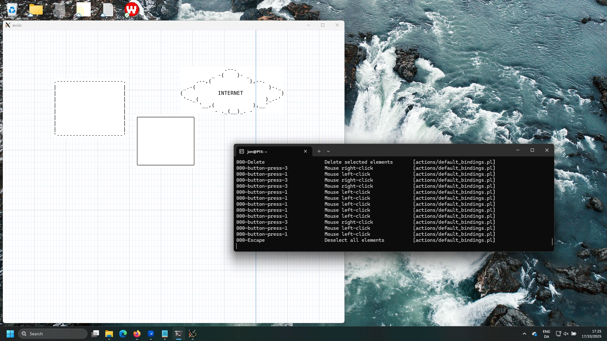
Windows
In the windows environment, you can use asciio through WSL or cygwin.
WSL
The use of WSL is not much different from the Linux environment.However, there are some things that need attention. This link talks about how to connect to the WSL environment and execute GUI programs through remote connections under Windows.
Cygwin
- First install Cygwin.
- Make sure the following components are installed correctly
- x11
- perl
- Gnome
- gun-make
- gcc-g++
- Search for "gcrypt" in all the packages to be installed, and install all the packages that appear.
- Install all dependent modules of asciio
Pay attention when installing perl modules, some may be installed through cpan, but some cannot, and can only be installed manually.
When compiling, the Makefile of several modules has an unrecognized option
-lnsl. removed it when install it manually.
Start asciio by the following method:
startxwin >/dev/null 2>&1 &
export DISPLAY=:0.0
asciio
Running asciio
$> asciio [file.asciio] # GUI application using Gtk3
$> tasciio [file.asciio] # TUI application
$> asciio_to_text file.asciio # converts asciio files to ASCII
Platforms
Asciio is developed on both Linux and Windows (cygwin).
Interface
Asciio input is from mouse and keyboard bindings, they are defined in a configuration files that you can change.
Asciio's interface is minimal by design.
keyboard bindings
This is the preferred method, and the fastest. The bindings are vim-like and which make the many bindings much easier to remember. See the Bindings section
mouse bindings
Although work can mostly be done using the keyboard, the mouse is still useful and it's fast when creating new diagrams. See Working efficiently
popup menus
My least favorite way of using Asciio, it's slow and cumbersome for most actions. I try to limit the amount of menu and sub menus.
Unicode support
Asciio supports Unicode is a work under progress; including support for Asian languages, thanks to the co-developer who writes in these languages, but you may need a font that supports them.
https://github.com/be5invis/Sarasa-Gothic/
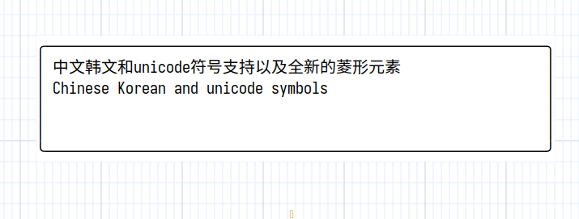
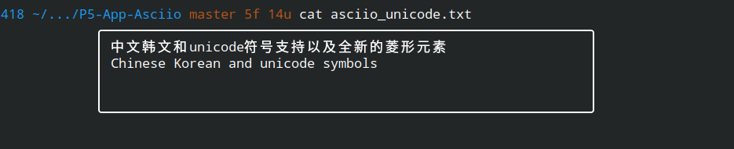
In the examples above the box is drawn with unicode characters, the box is oversized by design, it shrinks and expands properly.
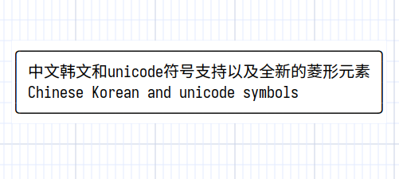
If you want to align Thai, or Arabic, or Hebrew, under normal circumstances, the default monospaced font of the system is fine. If you find that it cannot be aligned, you can download a font that can align them.
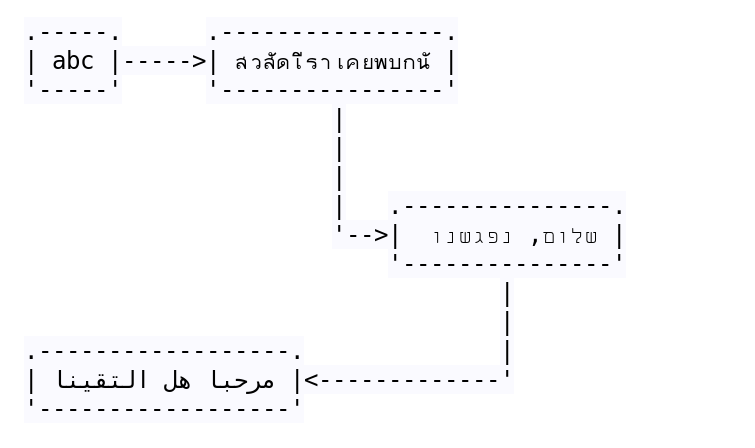
When displayed in exported software, you also need a font that aligns them.
.-----. .----------------.
| abc |----->| สวัสดีเราเคยพบกัน |
'-----' '----------------'
|
|
|
| .---------------.
'-->| שלום, נפגשנו |
'---------------'
|
|
.------------------. |
| مرحبا هل التقينا |<-------------'
'------------------'
Accessing documentation
Asciio's documentation is available in multiple formats
-
this HTML documentation, generated by mdbook
-
a manpage, available from within Asciio.
There's also:
-
a bindings list
-
a short help
-
a "user" defined documentation. «H» Add help box
UIs
Asciio offers multiple UIs
- a GUI
- a TUI (under construction)
- a command line interface
There's even a ticket about a web interface, if you're a websocket, rpc, minimal interface geek who like Web technology ... join us!
GUI
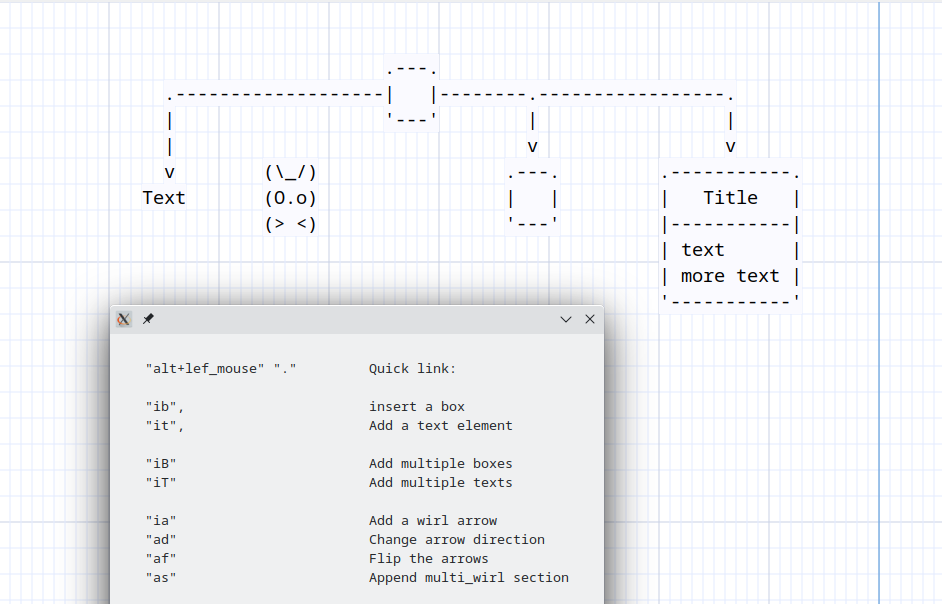
.-------------------------------------------------------------.
| ........................................................... |
| ..........-------------..------------..--------------...... |
| .........| stencils > || asciio > || box |..... |
| .........| Rulers > || computer > || text |..... |
| .........| File > || people > || wirl_arrow |..... |
grid----->......'-------------'| divers > || axis |..... |
| ..................^.....'------------'| ... |..... |
| ..................|...................'--------------'..... |
| ..................|........................................ |
'-------------------|-----------------------------------------'
|
context menu access some commands
most are accessed through the keyboard
Display colors
Access the color group with binding: «zc»
Night Colors
binding: «zcs»
change grid color
binding: «zcg»
change grid background color
binding: «zcg»
Display options
display/hide grid lines
binding: «zg»
display/hide hint lines
binding: «zh»
Displays thicker lines around the selected elements to help you with alignment
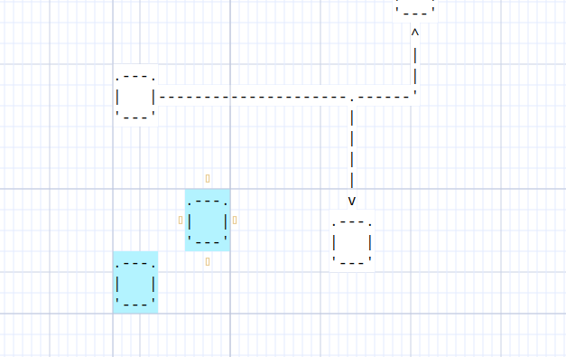
Rulers
Access the rule group with binding: «ir»
display/hide ruler
binding: «zr»
TUI
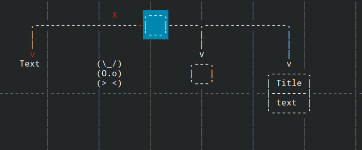
The TUI interface is a work in progress. Drawing graphs in a terminal (without mouse) is more difficult than it seem, I'm actively working on creating better bindings to make as smooth as when using a mouse.
- mouse emulation
- differences
- dialogs
- manpage
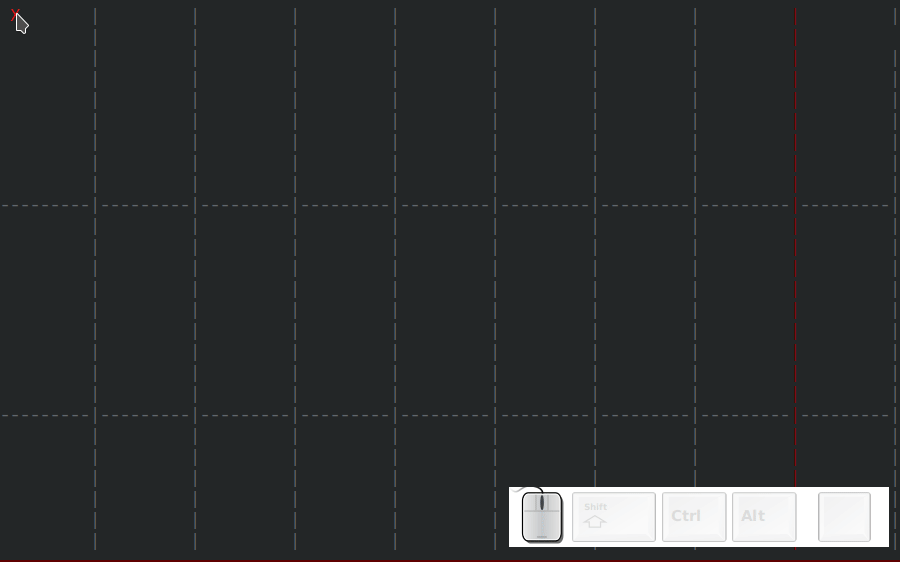
Asciio TUI and Vim
You can call Asciio from vim and insert your diagram.
map <leader><leader>a :call TAsciio()<cr>
function! TAsciio()
let line = getline('.')
let tempn = tempname()
let tempnt = tempn . '.txt'
let temp = shellescape(tempn)
let tempt = shellescape(tempnt)
exec "normal i Asciio_file:" . tempn . "\<Esc>"
if ! has("gui_running")
exec "silent !mkdir -p $(dirname " . temp . ")"
exec "silent !cp ~/.config/Asciio/templates/empty.asciio ". temp . "; tasciio " . temp . "; asciio_to_text " . temp . " >" . tempt
exec "read " . tempnt
endif
redraw!
endfunction
Stencils
Asciio boxes
Elements
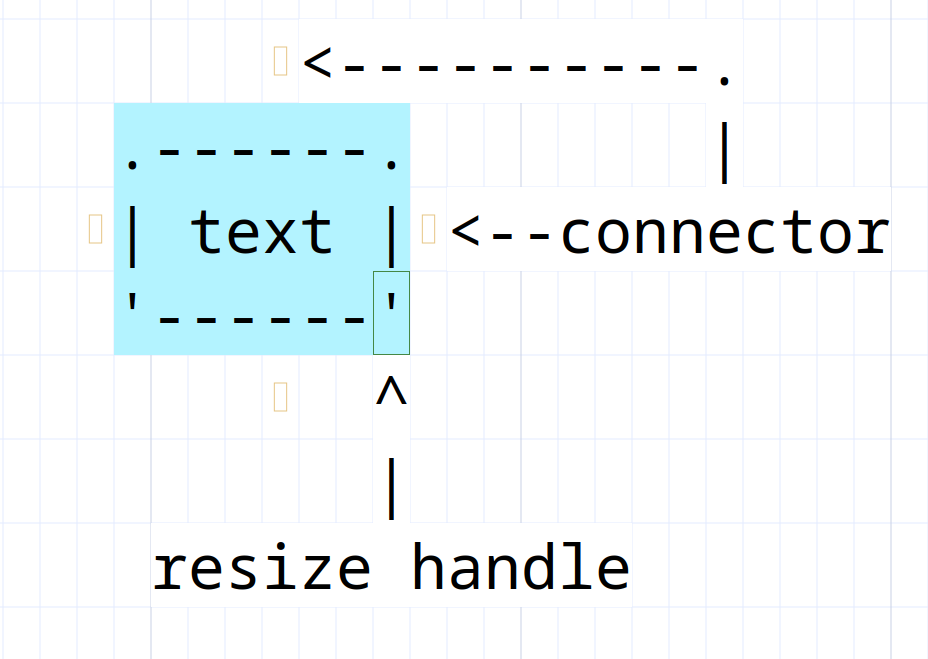
popup menu
You can access some functionality via the popup menu.
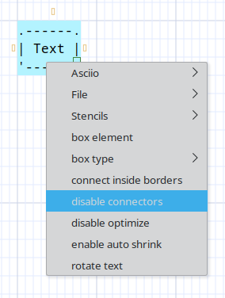
auto-shrink
If the text is changed, the size of the box will change to fit.
disable connectors
Enable or disable the possibility to connect to the box.
disable optimize
A standard box had four connectors, Asciio optimizes the arrow routes so they don't cross the box. You can disable that optimization.
connect inside element borders
Allow connection to be made anywhere inside the element borders , not just the connectors.
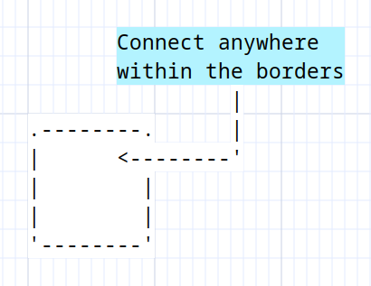
rotate box/text
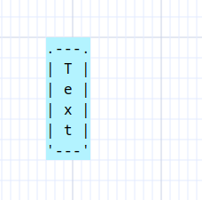
Types
A box
Binding: «b» Add box
A box with the frame drawn with Unicode characters
Binding: «A-b» Add unicode box
A text
Texts are just boxes without frames.
Binding: «t» Add text
A shrink-box
A box which is already has auto-shrink set
Binding: «B» Add shrink box
Asciio if and process boxes
| element | binding |
|---|---|
| Add if box | «ib» |
| Add process box | «ib» |
if-box and process-box
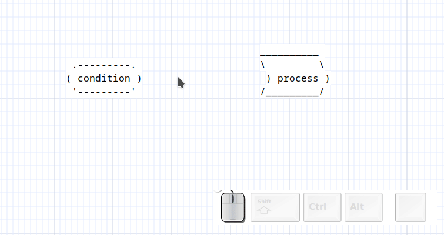
Asciio exec-boxes
An "exec-box" is and object that lets you run an external command and put its output in a box. There are different types of exec-boxes explained below.
Multi command
Binding: «ie» Add exec box
The simplest exec-box accepts multiple commands, one per line. It will redirect stderr for each command.
Editing the box will let you edit the command.
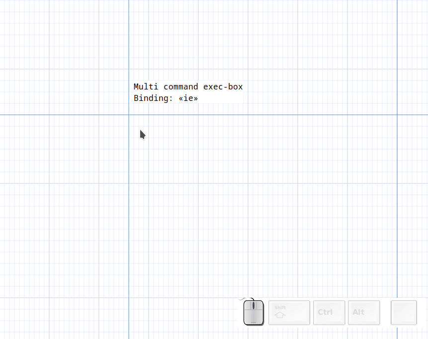
Verbatim
Binding: «iv» Add exec box verbatim
This exec-box doesn't redirect stderr, you can use it for commands that span multiple line or commands that take a multi line input
Editing the box will let you edit the command.
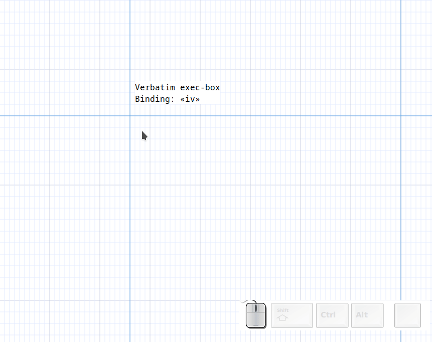
Once
Binding: «io» Add exec box verbatim once
This exec-box will run your commands once, editing the box will let you edit the command's output.
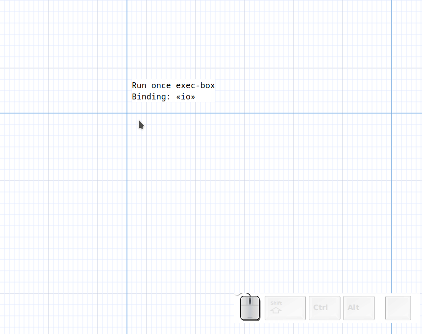
Add line numbers
Binding: «i + c-l» Add line numbered box
This is an example of a custom stencil which will add line numbers to your input.
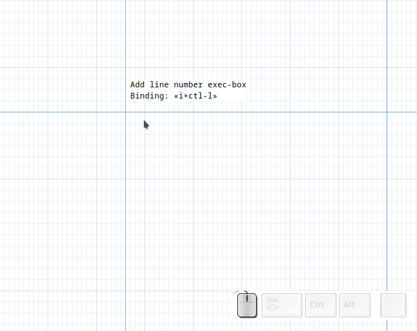
Examples
Using previously generated output
If you already have text in a file you can use 'cat your_file' as the command.
Tables
tbd: Command: ...
+------------+------------+------------+------------+
| input_size ‖ algorithmA | algorithmB | algorithmC |
+============+============+============+============+
| 1 ‖ 206.4 sec. | 206.4 sec. | 0.02 sec. |
+------------+------------+------------+------------+
| 250 ‖ - | 80 min. | 2.27 sec. |
+------------+------------+------------+------------+
FIGlet
Figlet generates large letters out of ordinary text.

You can specify a font with the -f option.
$ ls /usr/share/figlet/
646-ca.flc 646-hu.flc 646-se2.flc big.flf lean.flf smslant.flf
646-ca2.flc 646-irv.flc 646-yu.flc block.flf mini.flf standard.flf
646-cn.flc 646-it.flc 8859-2.flc bubble.flf mnemonic.flf term.flf
646-cu.flc 646-jp.flc 8859-3.flc digital.flf moscow.flc upper.flc
646-de.flc 646-kr.flc 8859-4.flc frango.flc script.flf ushebrew.flc
646-dk.flc 646-no.flc 8859-5.flc hz.flc shadow.flf uskata.flc
646-es.flc 646-no2.flc 8859-7.flc ilhebrew.flc slant.flf utf8.flc
646-es2.flc 646-pt.flc 8859-8.flc ivrit.flf small.flf
646-fr.flc 646-pt2.flc 8859-9.flc jis0201.flc smscript.flf
646-gb.flc 646-se.flc banner.flf koi8r.flc smshadow.flf
For example, we want to specify this font: slant
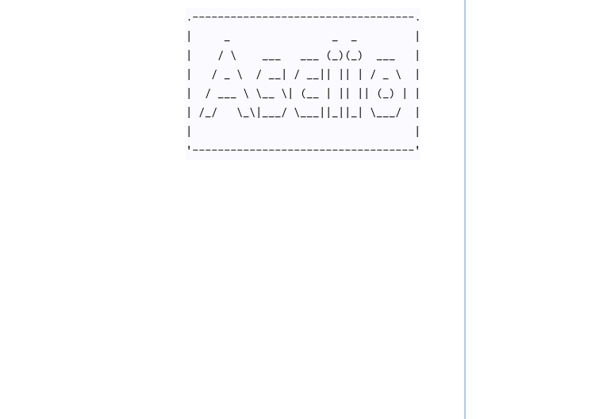
This is the exported effect:
.-----------------------------------.
| _ _ _ |
| / \ ___ ___ (_)(_) ___ |
| / _ \ / __| / __|| || | / _ \ |
| / ___ \ \__ \| (__ | || || (_) | |
| /_/ \_\|___/ \___||_||_| \___/ |
| |
'-----------------------------------'
.------------------------------------.
| ___ _ _ |
| / | _____ _____ (_)(_)____ |
| / /| | / ___// ___// // // __ \ |
| / ___ | (__ )/ /__ / // // /_/ / |
| /_/ |_|/____/ \___//_//_/ \____/ |
| |
'------------------------------------'
Diagon
Diagon transforms markdown expressions into an ascii-art representation.
Mathematical Expressions
File Tree
Use exec verbatim box to input multiple lines.
plantuml
Asciio arrows
| element | binding |
|---|---|
| Add arrow | «ia» |
| Add Unicode arrow | «i+Alt-a» |
| Add angled arrow | «iA» |
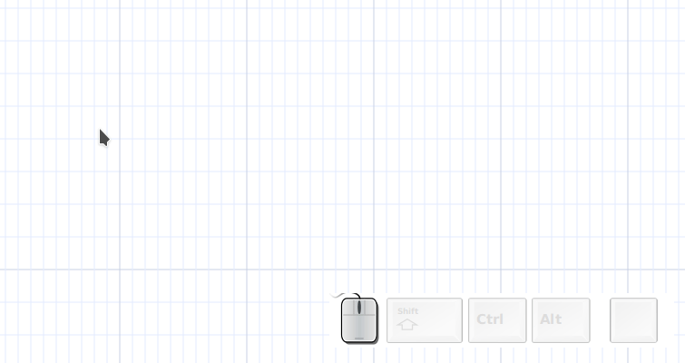
wirl-arrow
Rotating the end clockwise or counter-clockwise changes its direction.
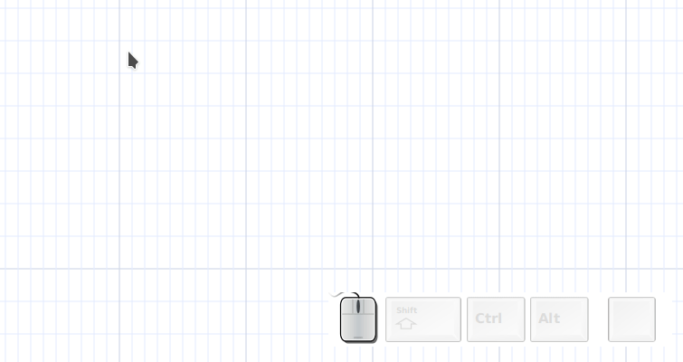
multi section wirl-arrow
A set of whirl arrows connected to each other.
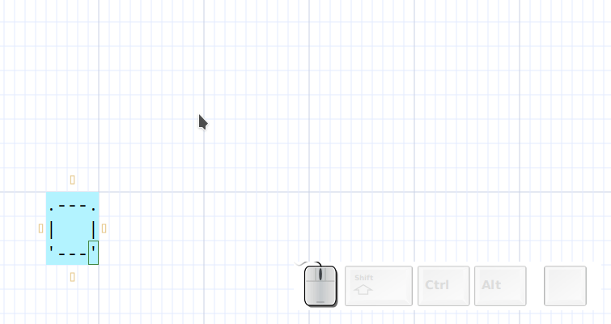
angled-arrow and axis
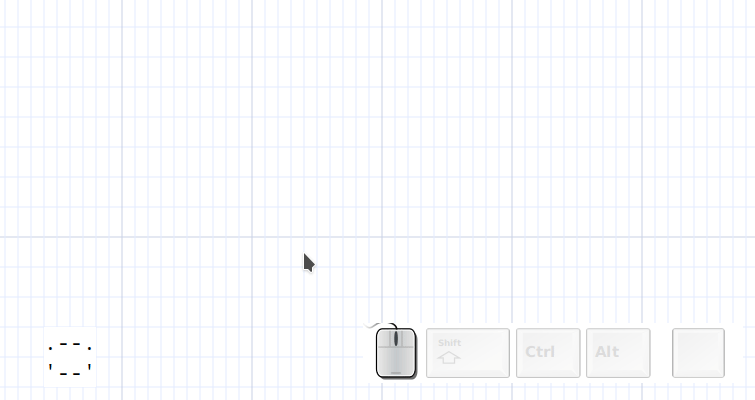
Note that an axis doesn't connect.
Connecting lines
A specialized wirl-arrow with no head nor tail.
| element | binding |
|---|---|
| Add ASCII line | «il» |
| Add Unicode line | «iL» |
| Add Unicode bold line | «i+Alt-l» |
| Add Unicode double line | «i+Shift+Alt-l» |
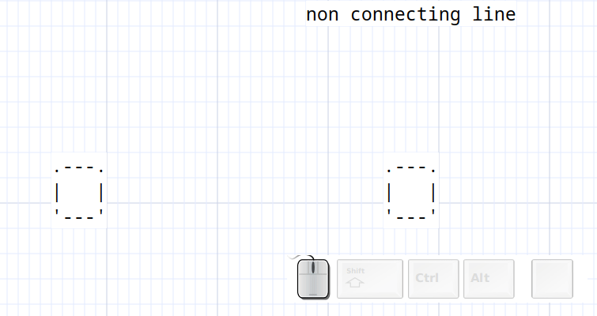
Non connecting lines
A specialized wirl-arrow with no head nor tail and auto-connection turned off, it's often used to draw the table in the crossing mode.
| element | binding |
|---|---|
| Add ASCII non-connecting line | «ik» |
| Add Unicode non-connecting line | «iK» |
| Add Unicode non-connecting bold line | «i+Alt-k» |
| Add Unicode non-connecting double line | «i+Shift+Alt-K» |
ascii line
----------------------.
|
|
|
|
|
unicode line
─────────────────────────╮
│
│
│
│
│
unicode bold line
━━━━━━━━━━━━━━━━━━━━━━━┓
┃
┃
┃
┃
unicode double line
═══════════════════════════╗
║
║
║
║
║
Example of non-connecting lines in crossing mode
╔═════╦═════╦══════╦═════╦════╦═════╗
║ ║ ║ ║ ║ ║ ║
╠═════╬═════╬══════╬═════╬════╬═════╣
║ ║ A ║ ║ B ║ ║ ║
╠═════╬═════╬══════╬═════╬════╬═════╣
║ ║ C ║ ║ ║ ║ ║
╠═════╬═════╬══════╬═════╬════╬═════╣
║ ║ ║ ║ ║ D ║ ║
╠═════╬═════╬══════╬═════╬════╬═════╣
╚═════╩═════╩══════╩═════╩════╩═════╝
Pseudo-connectors
Pseudo-connectors are a one-glyph-text boxes, used by git mode for example, which can also be used to add connectors to user-created groups.
- create a pseudo-connector
- change its glyph if necessary
- place it
- group all your elements
pseudo-connector with 4 "optimized" connectors
| Binding | Connector |
|---|---|
| o | «ic» |
| * | «iC» |
pseudo-connector with one connector
Use a "center connect box"
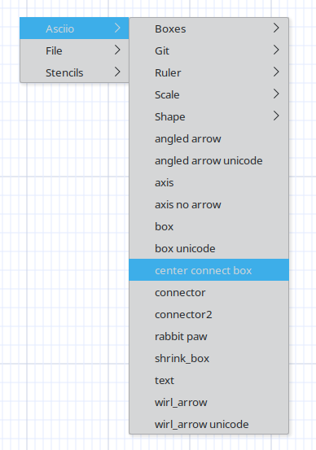
Example
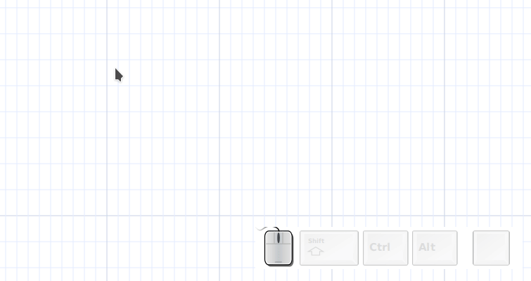
Box connectors
It is possible to add custom connectors when creating a box stencil, see setup/Asciio for the default stencils.
create_box
(
NAME => 'rabbit paw',
TEXT_ONLY => <<'TEXT'
(\_/)
(O.o)
/>
TEXT
,
RESIZABLE => 0,
WITH_FRAME => 0,
DEFAULT_CONNECTORS => 0,
CONNECTORS => [[2, -1, -1, 2, -1, -1, 'paw']]
),
CONNECTORS
[ # An array of connector
[
2, # X coordinate
-1, # percentage of width, -1 to disabe
-1, # offset added to position if perventage is used
2, # Y coordinate
-1, # same as above for Y
-1, # same as above for Y
'paw' # connector name
],
[
# next connector
...
],
]
The box element class also has these functions:
- add_connector, dynamically add connector
- remove_connector, by name
Example
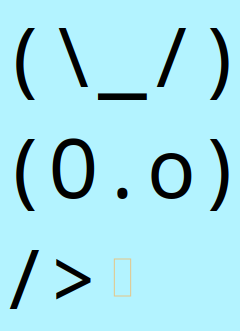
Asciio shapes
You can add triangles, rombus, and elipses via the popup menu or use the bindings below:
| element | binding |
|---|---|
| Add rhombus | «ir» |
| Add ellipse | «ie» |
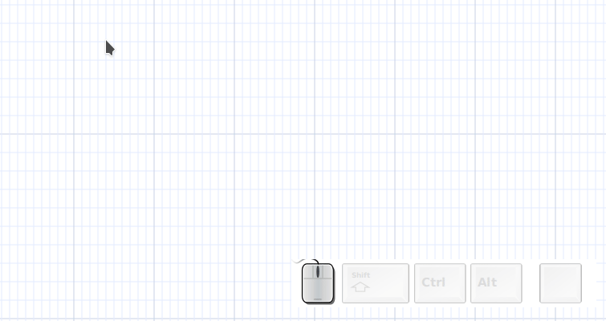
verbatim objects
Text elements with ASCII art or normal text. Asciio has as set of verbatim elements in its stencils which can be accessed via the popup menu, or you can add a binding if you use them often. The element's text can be edited. You can also use any Ascii-art/Text you have in a file via an exec-box.
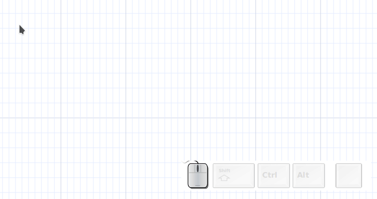
___________
1 //////|\\\\\\
2 '.-----------.'
3 | ___ |
4 (\_/) Zzz | [] | | [] | (\_/)
5 (-.-) |____|_|____| (o.o)
6 (> <) (> <)
7
8
9
0
scales
Simple text elements representing scales/rulers that you can use to scale or align, see hints, your elements.
1 1234567890
2
3 1___5____0____5____0____5____0____5____0____5____0
4
5
6
7
8
9
0
User stencils
You can create stencils that you are going to reuse, details of how to do it in the best way can be found in the Configuration section.
Here are three examples:
integrating Asciio and ditaa (third party example)
There was a page (Corn Empire) where a user detailed how to make an integration.
That page is not online anymore, I modified a copy for this documentation.
If you are the original author please contact me so I can give you credit.
Introduction
You found this page because you are looking for more information on installing asciio and ditaa, and then modifying asciio to better interact with ditaa. Well you came to the right place. This guide will take you step-by-step through installing both tools, and modifying asciio to output diagrams to ditaa.
Modifying asciio
Make yourself familiar with ditaa and asciio, you may see the benefit of outputting asciio text files that are compatible with ditaa without modification. Or better yet, generate your diagrams for you when you save :) . This section will explain how to do all of that and more!
Adding in a Ditaa Stencil
You will need to create a new stencils file to create boxes and arrows that are compatible with ditaa (you could optionally modify the standard files if you will only use asciio for ditaa purposes). I got the idea for the modifications from here: http://strawp.net/archive/geeking-out-with-diagrams-in-ascii/
A Standard Box
Go to the App/Asciio/setup/stencils (in the /usr/share/perl5/ or /usr/share/perl/5.10.0/) directory, and find the asciio file. Using for favourite editor, copy and paste the standard box code into a new file called ditaa. Then make the following changes to the standard box code in this new file:
To change the corners, modify line 14/33 and change . to + and modify line 17/36 and change ' to +.
Then modify lines 5 and 7 in the same way. Replace the . with + and the ' with +.
Or you could optionally just copy and paste the completed code below (the $VAR1 = [ is only needed once, and just starts off the file, the ]; at the end of the block, ends the file. All bless calls should be between these lines) :
$VAR1 = [
bless( {
'HEIGHT' => 3,
'TEXT' => '+---+
| |
+---+',
'NAME' => 'ditaabox',
'WIDTH' => 5,
'TEXT_ONLY' => '',
'TITLE' => '',
'BOX_TYPE' =>
[
[TRUE, 'top', '+', '-', '+', TRUE, ],
[FALSE, 'title separator', '|', '-', '|', TRUE, ],
[TRUE, 'body separator', '| ', '|', ' |', TRUE, ],
[TRUE, 'bottom', '+', '-', '+', TRUE, ],
] ,
'EDITABLE' => 1,
RESIZABLE => 1,
X_OFFSET => 0, Y_OFFSET => 0,
}, 'App::Asciio::stripes::editable_box2' ),
];
Add Rounded Box
But why stop there? How about we add in a nice ditaa rounded box. Add this code to the ditaa stencil file just below our modified box code:
bless( {
'HEIGHT' => 3,
'TEXT' => '/---\\
| |
\\---/',
'NAME' => 'roundedbox',
'WIDTH' => 5,
'TEXT_ONLY' => '',
'TITLE' => '',
'BOX_TYPE' =>
[
[TRUE, 'top', '/', '-', '\\', TRUE, ],
[FALSE, 'title separator', '|', '-', '|', TRUE, ],
[TRUE, 'body separator', '| ', '|', ' |', TRUE, ],
[TRUE, 'bottom', '\\', '-', '/', TRUE, ],
] ,
'EDITABLE' => 1,
RESIZABLE => 1,
X_OFFSET => 0, Y_OFFSET => 0,
}, 'App::Asciio::stripes::editable_box2' ),
Add ditaa Arrows
The asciio arrows don't jive well with ditaa. You can add this in the ditaa stencil file, it is based on the whirl arrow:
bless({
'NAME' => 'ditaa_arrow',
'HEIGHT' => 6,
'WIDTH' => 17,
'POINTS' => [[16,5]],
'SELECTED' => 0,
'EDITABLE' => 1,
'ALLOW_DIAGONAL_LINES' => 0,
'POINTS_OFFSETS' => [[0,0]],
'DIRECTION' => 'down-right' ,
'ARROW_TYPE' =>
[
['origin', '', '*', '', '', '', TRUE],
['up', '|', '|', '', '', '^', TRUE],
['down', '|', '|', '', '', 'v', TRUE],
['left', '-', '-', '', '', '<', TRUE],
['upleft', '|', '|', '\\', '-', '<', TRUE],
['leftup', '-', '-', '\\', '|', '^', TRUE],
['downleft', '|', '|', '/', '-', '<', TRUE],
['leftdown', '-', '-', '/', '|', 'v', TRUE],
['right', '-', '-','', '', '>', TRUE],
['upright', '|', '|', '/', '-', '>', TRUE],
['rightup', '-', '-', '/', '|', '^', TRUE],
['downright', '|', '|', '\\', '-', '>', TRUE],
['rightdown', '-', '-', '\\', '|', 'v', TRUE],
['45', '/', '/', '', '', '^', TRUE, ],
['135', '\\', '\\', '', '', 'v', TRUE, ],
['225', '/', '/', '', '', 'v', TRUE, ],
['315', '\\', '\\', '', '', '^', TRUE, ],
],
'ARROWS' =>
[
bless(
{
'HEIGHT' => 6,
'STRIPES' =>
[
{'TEXT' => '|
|
|
|
|
\'',
'HEIGHT' => 6,
'Y_OFFSET' => 0,
'WIDTH' => 1,
'X_OFFSET' => 0}
,
{
'TEXT' => '--------------->',
'HEIGHT' => 1,
'Y_OFFSET' => 5,
'WIDTH' => 16,
'X_OFFSET' => 1
}
],
'WIDTH' => 17,
'END_X' => 16,
'ARROW_TYPE' =>
[
#name: $start, $body, $connection, $body_2, $end
['origin', '', '*', '', '', '', TRUE],
['up', '|', '|', '', '', '^', TRUE],
['down', '|', '|', '', '', 'v', TRUE],
['left', '-', '-', '', '', '<', TRUE],
['upleft', '|', '|', '\\', '-', '<', TRUE],
['leftup', '-', '-', '\\', '|', '^', TRUE],
['downleft', '|', '|', '/', '-', '<', TRUE],
['leftdown', '-', '-', '/', '|', 'v', TRUE],
['right', '-', '-','', '', '>', TRUE],
['upright', '|', '|', '/', '-', '>', TRUE],
['rightup', '-', '-', '/', '|', '^', TRUE],
['downright', '|', '|', '\\', '-', '>', TRUE],
['rightdown', '-', '-', '\\', '|', 'v', TRUE],
['45', '/', '/', '', '', '^', TRUE, ],
['135', '\\', '\\', '', '', 'v', TRUE, ],
['225', '/', '/', '', '', 'v', TRUE, ],
['315', '\\', '\\', '', '', '^', TRUE, ],
],
'END_Y' => 5,
'DIRECTION' => 'down-right'
}, 'App::Asciio::stripes::wirl_arrow' ),
],
}, 'App::Asciio::stripes::section_wirl_arrow' ) ,
Add Colours and Special Shape Codes
All of the above will give you the core functionality of ditaa into asciio. But what about some basic colour tags, and shape codes. I've created a special stencil file for those. You can copy this below, and place it in a file called ditaatags next to the asciio stencil file.
my @ascii =
(
'shapes/document' => <<'EOA',
{d}
EOA
'shapes/storage' => <<'EOA',
{s}
EOA
'shapes/input_output' => <<'EOA',
{io}
EOA
'shapes/tr' => <<'EOA',
{tr}
EOA
'shapes/o' => <<'EOA',
{o}
EOA
'shapes/mo' => <<'EOA',
{mo}
EOA
'shapes/c' => <<'EOA',
{c}
EOA
'colours/Red' => <<'EOA',
cRED
EOA
'colours/Blue' => <<'EOA',
cBLU
EOA
'colours/Pink' => <<'EOA',
cPNK
EOA
'colours/Black' => <<'EOA',
cBLK
EOA
'colours/Green' => <<'EOA',
cGRE
EOA
'colours/Yellow' => <<'EOA',
cYEL
EOA
) ;
my @boxes ;
use App::Asciio::stripes::editable_box2 ;
for(my $ascii_index = 0 ; $ascii_index < $#ascii ; $ascii_index+= 2)
{
my $box = new App::Asciio::stripes::editable_box2
({
TEXT_ONLY => $ascii[$ascii_index + 1],
EDITABLE => 1,
RESIZABLE => 1,
}) ;
$box->set_box_type([map{$_->[0] = 0; $_} @{$box->get_box_type()}]) ;
$box->shrink() ;
$box->{'NAME'} = $ascii[$ascii_index] ;
push @boxes, $box ;
}
[@boxes] ;
Once these have been added, you need to modify the setup.ini file to point to the new stencils. To do that, run the following commands:
cd .. sudo vim setup.ini Where it says 'stencils/divers', add on the next line, 'stencils/ditaa', and then 'stencils/ditaatags',. Your new file should look like this:
{
STENCILS =>
[
'stencils/asciio',
'stencils/computer',
'stencils/people',
'stencils/divers',
'stencils/ditaa',
'stencils/ditaatags',
],
ACTION_FILES =>
[
'actions/align.pl',
'actions/clipboard.pl',
'actions/debug.pl',
'actions/new_elements.pl',
'actions/elements_manipulation.pl',
'actions/file.pl',
'actions/mouse.pl',
'actions/colors.pl',
'actions/unsorted.pl',
'actions/presentation.pl',
'actions/context_menu_multi_wirl.pl',
'actions/context_menu_box.pl',
'actions/context_menu_rulers.pl',
],
HOOK_FILES =>
[
'hooks/canonize_connections.pl',
],
ASCIIO_OBJECT_SETUP =>
[
'asciio_object/basic.pl',
],
IMPORT_EXPORT =>
[
'import_export/ascii.pl',
'import_export/perl.pl',
'import_export/png.pl',
],
}
Modifying Saving
It is nice to generate a text file of the data in case you need to make further tweaks before running it through ditaa. It is also required if you want to generate .pngs on the fly of your diagrams.
Go to App/Asciio/setup/actions and load up the file.pl file.
On line 65, replace the original saving code with the following:
#$new_title = $self->save_with_type($elements_to_save, $type, $file_name) ;
## Regardless of previous stuff, save one asciio file and one asciio.<ext>.txt ascii file
## Courtesy of Strawp of http://strawp.net/archive/geeking-out-with-diagrams-in-ascii/
$new_title = $self->save_with_type($elements_to_save, "asciio", $file_name) ;
$new_title = $self->save_with_type($elements_to_save, "txt", $file_name.".txt") ;
## Run ditaa to convert text version into nice copy
## Use this if you have Proc::Background available. Otherwise, use the system call below.
#use Proc::Background;
#my $proc1 = Proc::Background->new("c:\\bin\\ditaa.bat \"".$file_name.".txt\" \"".$file_name.".png\"");
#my $proc1 = Proc::Background->new("java -jar /home/thomas/programs/ditaa/ditaa0_9.jar \"".$file_name.".txt\" \"".$file_name.".png\"");
## This call converts while saving. Slows down save time. Replace the path below with your path to ditaa.jar
## You can add any special parameters here that you commonly use as well.
## Use this command if you unzipped the .jar file
system("java -jar /home/thomas/programs/asciio-ditaa/ditaa0_9.jar \"".$file_name.".txt\" \"".$file_name.".png\"");
## Use this command if you installed the .deb.
#system("ditaa \"".$file_name.".txt\" \"".$file_name.".png\"");
Using the New Setup
Now that you have made all of your tweaks, you are ready to start using your asciio/ditaa combo! Start by making a simple diagram. Here is one below:
Notice when you save this file for the first time:
Several files are created at first. As well as our rendered image.
Now, lets spice it up with some colour and some shapes. Use the right click menu to add the document tag to each of the items labelled document. To do this you will need to:
Right click and select stencils → ditaatags → shapes → document Drag the {d} over the first document. I suggest you group any shapes, and shape modifiers by using CTRL+G once you set them up. If you do this, all of your pieces will move around if you have to tweak your image. Grouping involves selecting each item (hold shift while clicking each item), then press CTRL+G on your keyboard. This will cause this group of items to change background colour, and if you move one item, they will all move together. (You can ungroup by pressing CTRL+U) Add another {d} to the other document. If your item is falling behind the item you want, you can press CTRL+F to bring it to the foreground. Or CTRL+B to push the item on top into the background. Now lets add some colour. Right click, and add some colour tags to the documents. As you save, you will notice the .png updates automatically.
Here is your final work of art:
Troubleshooting
asciio Won't Load File I've noticed that if you modify the stock asciio shapes (either through the gui itself, or in the stencils file) often times if you launch asciio, and then try to load a file with altered shapes, it will fail to load. It generates this output in the terminal:
thomas@thomas-desktop:~/programs/asciio-ditaa$ asciio Using setup directory:'/usr/share/perl5/App/Asciio/setup/' running action 'Open'. load_file: can't load file '/home/thomas/programs/asciio-ditaa/saves/test': Unrecognized character \x8E in column 23827 at (eval 105) line 372. You can still get asciio to open, you just need to launch it with the file you want to load. So either launch it by typing something like:
thomas@thomas-desktop:~/programs/asciio-ditaa$ asciio /home/thomas/programs/asciio-ditaa/saves/test Using setup directory:'/usr/share/perl5/App/Asciio/setup/' running action 'Open'. Or launch from your file manager. In my case, Nautilus:
asciio Forgets Where I Saved
When loading asciio for the first time, and saving, I find that asciio forgets where I saved the document. It always returns to the original launching location.
To avoid this, I'd recommend that after your first save, you reopen asciio by using one of the two procedures mentioned above. This will allow it to remember where you are working, and the Save function will work correctly.
Editing elements text and attributes
Asciio has two editing mode, Dialog and Inline, the default mode is Dialog.
Dialog editing
Binding: Return, double-click
Asciio opens a dialog which lets you set:
- boxing options
- title
- text
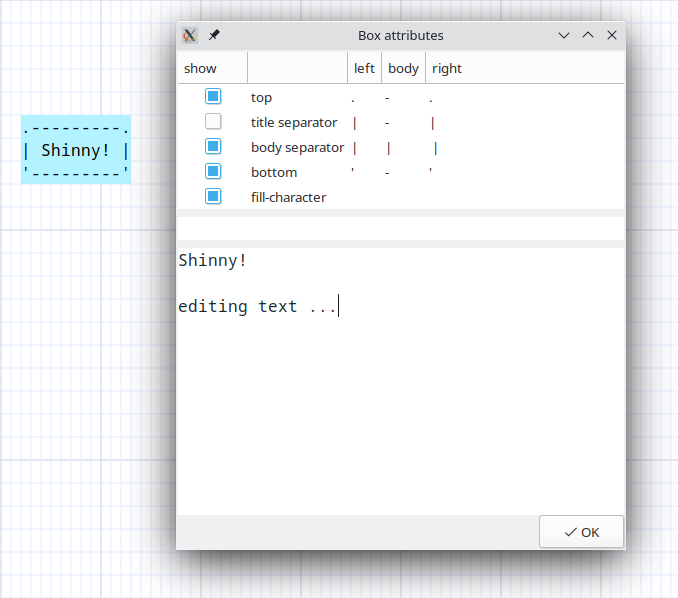
Inline editing
Binding: Return, double-click
In this mode you can only edit the text.
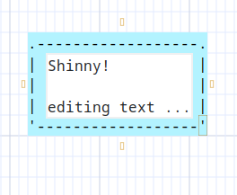
Alternate editing
You can edit in the other mode with these bindings:
- ctl + Return
- ctl + double-click
Changing mode
To change the mode during the session use:
Binding: «zi»
Setting the editing mode in the user configuration
EDIT_TEXT_INLINE => 0,
EDIT_TEXT_INLINE => 0Indicates that the default editing mode isDialog editingEDIT_TEXT_INLINE => 1Indicates that the default editing mode isInline editing
Markup mode
We can use color in asciio, But if exported, the color information will be lost. The markup mode adds marks in the chart, and these marks can be retained when exporting, so that special effects can be displayed in some specific software.
1 Use markup mode
To use marks in the chart, turn on this option in the configuration.The markup enable variable is the basic attribute of the chart and cannot be changed at runtime.
USE_MARKUP_MODE => 'zimwiki',
If you do not need to use any markup mode, please keep this variable empty.
USE_MARKUP_MODE => '',
Currently, only zimwiki format markup is supported, then markdown format or pure html format may be supported in the future.
2 zimwiki format description
2.1 Edit marks
zimwiki markup mode currently supports text editing of box type elements.Just place the text in the middle of the marks.
Currently supports 5 types of markers:
- bold
<b>something</b>
- underline
<u>something</u>
- double underline
<span link="https://github.com/nkh/P5-App-Asciio">link name</span>
- strikethrough
<s>something</s>
- italics
<i>something</i>
This is what it looks like in Asciio:
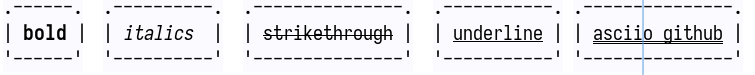
This is the effect in inline editing mode:
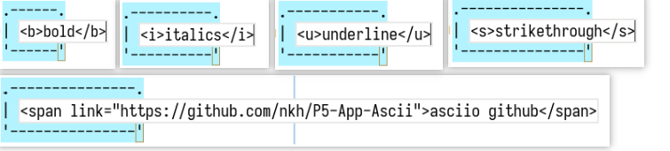
Marks can only be valid for a single line, not multi lines.
Marks support nesting:
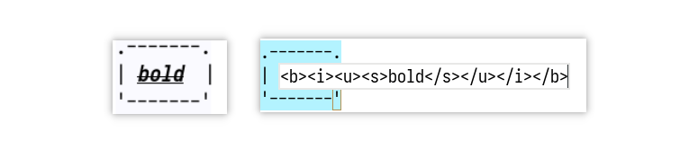
Although this function is supported, it is not recommended to use it in this way, and it does not make much sense
2.2 Export
Normally, when exporting to ascii, you will get the following text
Binding: «ctl-e» «shift-Y» «Y»
.----------. .---------------. .-----------. .---------------.
| italics | | strikethrough | | underline | | asciio github |
'----------' '---------------' '-----------' '---------------'
Currently, an export format is also supported, and the mark up character is added, which can be recognized by zim.
Binding: «ctl-shift-E»
.----------. .---------------. .-----------.
| //italics// | | ~~strikethrough~~ | | __underline__ |
'----------' '---------------' '-----------'
In the zim environment, they will be rendered like this:
Working efficiently
You can do a lot of thing with just the mouse and the popup menus but that would be a mistake, keyboard bindings are much faster and more efficient, including moving elements around.
The mouse shines when quick-linking elements, they allow you to create a base diagram fast but editing and fine tuning goes faster with the keyboard or keyboard + mouse.
Learn the keyboard bindings, they are a very good way to use Asciio.
Keyboard
Asciio has many bindings which let you work effectively, a list of all the bindings can be found in the Bindings section.
| Example |
|---|
| action | binding |
|---|---|
| insert a box | ib |
| resize it | 2, 4 |
| move it | hjkl/Arrows |
| insert a new box | ib |
| insert an arrow | ia |
| connect other box | Alt+A, hjkl/Arrows |
| escape arrow end mode | Escape |
| select both boxes | V |
| align them | A, t |
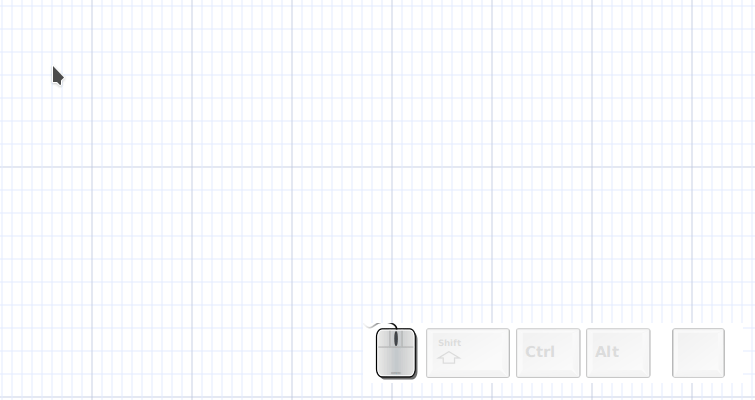
Mouse
Quick link
Binding: «alt-left-mouse-click»
- create a box is nothing is selected
- if only a box is selected, create a new box and connect to it
- if a box is selected and mouse over a box, connect them
- if multiple boxes are selected, create a box and connect to all boxes

Quick copy
Binding: «alt-shift-left-mouse-click»
Copy the current selection and move it to another position, see cloning

Quick arrow
Binding: «ctl-alt-mouse-motion»
If an arrow is selected, move its end point with the mouse.

Quick section
Binding: «ctl-alt-left-mouse-click»
- If a wirl arrow is selected, add section.
- if another element is selected, add new arrow
You can then move the its end point with the mouse. releasing «ctl» lets you move the mouse to another position for a new section.

Quick box and section
You can quickly create boxes and section by combining quick link and quick section.
- «alt-left-mouse-click», create a box
- «ctl-alt-left-mouse-click», link the box to a new arrow
- move mouse
- «ctl-alt-left-mouse-click», add a section
- move mouse
- «ctl-alt-left-mouse-click», add a section
- move mouse
- «alt-left-mouse-click», connect last section to new box

Cloning
You can activate the cloning feature to quickly add elements.
Binding: c
Cloning Base Elements
When you initiate cloning without any elements selected, Asciio allows you to clone one of the base elements.
| Element | Binding |
|---|---|
| Box | b |
| Text | t |
| Wirl Arrow | a |
| Angled Arrow | A |
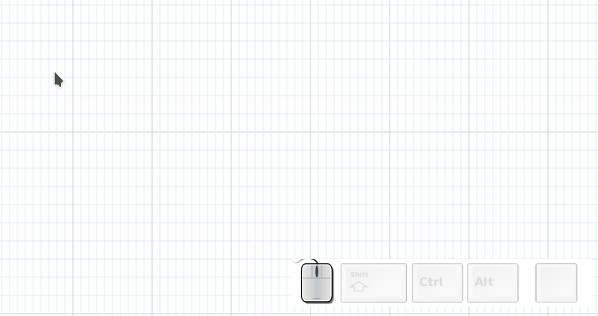
Cloning the Selection
You can also clone a set of elements that have been selected. The bindings for the base elements are still applicable.

Hint Lines
If hint lines are enabled, additional lines are displayed to indicate the limits of the elements being cloned. You can toggle the hint lines on and off.
Binding: h

Stencils and "Drag And Drop"
Stencils
You can access Stencils via "Drag and Drop".
Asciio has bindings to open stencils in a separate instance
Start Binding: is
Then uses one of the following keys:
| bindings | action |
|---|---|
| s | select from user stencils in $HOME/.config/Asciio/stencils/ |
| d | open stencil 'default_stencil.asciio' from current directory |
| a | select stencil from your computer |
| 0 | open 'elements.asciio' from $HOME/.config/Asciio/stencils/ |
| 1 | open 'computer.asciio' from $HOME/.config/Asciio/stencils/ |
| 2 | open 'people.asciio' from $HOME/.config/Asciio/stencils/ |
| 3 | open 'buildings.asciio' from $HOME/.config/Asciio/stencils/ |
user stencils
User stencils are plain Asciio files.
The distribution contains a few asciio stencils in "setup/Stencils/*.asciio", copy the ones you want to your $HOME/.config/Asciio/stencils.
You can create a new stencil directly from the file picker, just type the name of the new stencil and open it.
Drag and Drop
Binding: control + left click + drag
| Type | From | To |
|---|---|---|
| Asciio elements | Asciio | Asciio |
| Asciio elements | Asciio | text applications |
| Text | text applications | Asciio |
| URLs | URL aplications | Asciio |
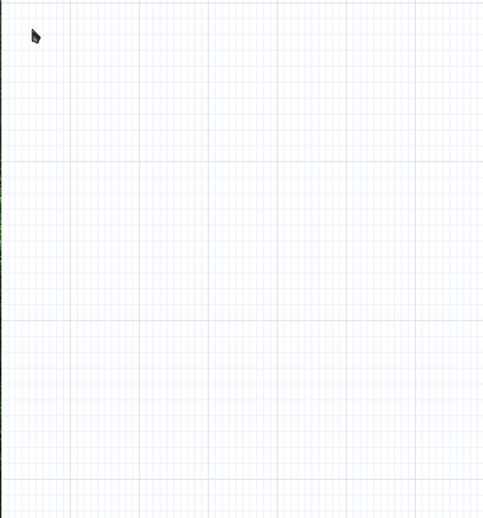
Strip groups
Export/Save
Asciio format
Exporting to ASCII
You can export to a file in ASCII by using a '.txt' file extension.
You can also export the selection, in ASCII, to the Primary clipboard.
SVG
Asciio doesn't export directly to SVG but uses a text to SVG application like Goat or SvgBob.
Create a diagram in Asciio
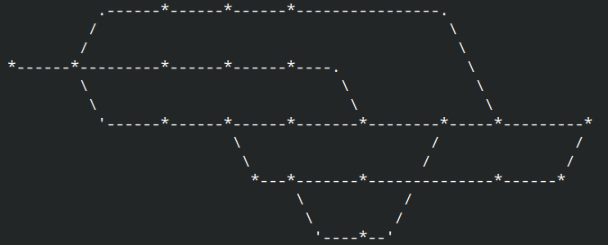
Export it to SVG
Further process the SVG
I used fskpf web site to generate a pseudo hand-drawn graph out of it
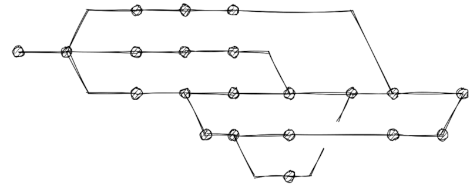
The svg2roughj sproject is here
Clipboard
Modes
git
.*-----*------------------------------*
/ \
/ \
*------*---------*-----BETA---. \
\ \ \
\ .-----. ' \
.-------------. *---| fix |---*-----RELEASE 1.3------>*-----*---------*
| Release 2.0 | '-----' \ / /
|-------------| \ / /
| changes |-------------------> '---*-------*--------------*------*
| tag: ... | \ /
| eta: ... | \ /
'-------------' *-------'
The git mode allows you to draw git graph quickly.
The git mode redefines some bindings to allow you to work faster. Only the bindings listed below are available when editing.
| action | binding |
|---|---|
| Exit git mode | «Escape» |
| Undo | «u» |
| Insert and link node | «g» «right-click» |
| Change arrow direction | «d» |
| Add box | «b» |
| Add text | «t» |
| Add arrow | «a» |
| Select objects | «left-click» |
| Edit Selected element | «Return» «double-click» |
| Delete elements | «Delete» «x» |
| Flip hint lines | «h» |
| Display popup menu | «alt+right-click» |
When you insert and link a node:
- if nothing is under the pointer or selected, it will insert a commit node
- if a node is selected and nothing under the pointer, it will insert a new node and connect with the previously selected node
- if a node is selected and the pointer is over a node, it will link the nodes
Let's create a git graph.
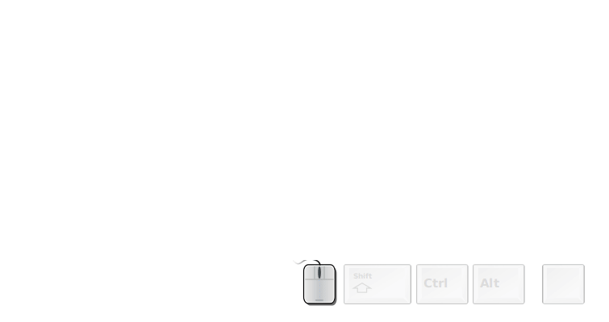
You can export the text and use it in our documentation
.----------------------------------.
| feature branch |
| |
| *-------------------* |
| / \ |
| / \ |
'----/-------------------------\---'
/ \
*---------*---------*---------*---------*---------*
^ ^
| |
| |
| |
we need a new we want to merge here
feature branch
or you can generate some fancy SVGs for a presentation.
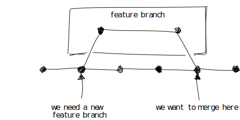
The connector and arrow type of the git mode can be changed.
In the user configuration for the connector,
GIT_MODE_CONNECTOR_CHAR_LIST => ['*', 'o', '+', 'x', 'X', '┼', '╋', '╬'],
or in the popup menu for both.
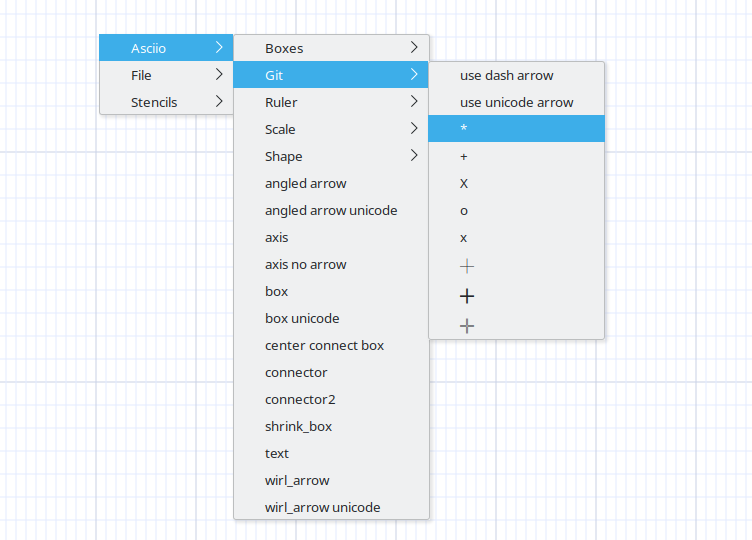
Cross Mode
1 Introduction
In normal mode, elements boundaries are independent of each.
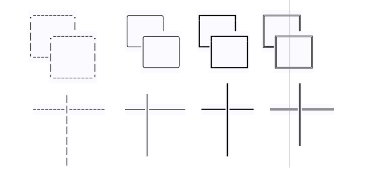
In cross mode intersections are merged:
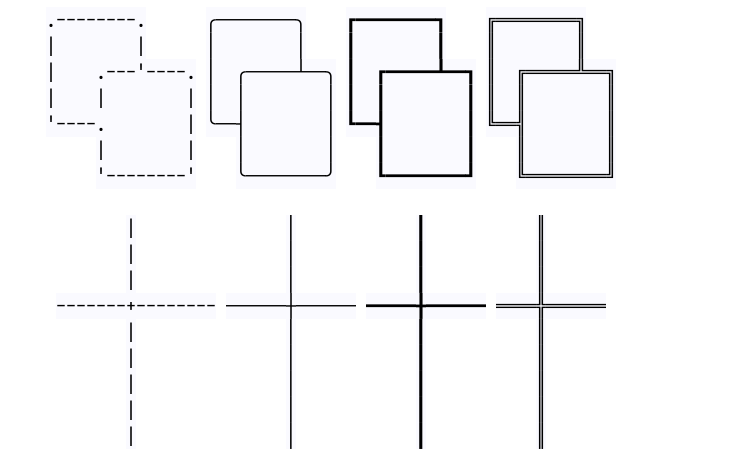
2 Complex graphics
The cross-mode lets you create graphics like this table
╔═══════╤══════════════════════════════════════════════════════════════╗
║ │ test scores ║
║ ├──────┬───────┬───────┬────────┬───────┬──────┬────────┬──────╢
║ Name │ Math│Physics│ │ │ │ │ │ ║
╟───────┼──────┼───────┼───────┼────────┼───────┼──────┼────────┼──────╢
║ Jim │ A+ │ B │ │ │ │ │ │ ║
╟───────┼──────┼───────┼───────┼────────┼───────┼──────┼────────┼──────╢
║Stephen│ B │ A │ │ │ │ │ │ ║
╟───────┼──────┼───────┼───────┼────────┼───────┼──────┼────────┼──────╢
║ Kate │ A │ C │ │ │ │ │ │ ║
╚═══════╧══════╧═══════╧═══════╧════════╧═══════╧══════╧════════╧══════╝
3 Enabling cross-mode
3.1 Globally
Add this line in your user configuration.
USE_CROSS_MODE => 1,
3.2 Dynamically
Binding: «z-x» 'Switch cross mode'
4 Line and Box
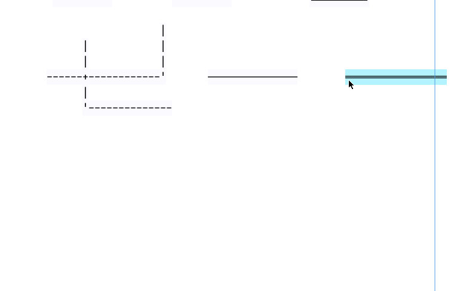
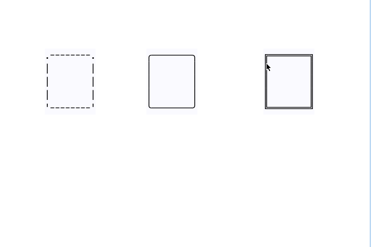
5 Lines and boxes
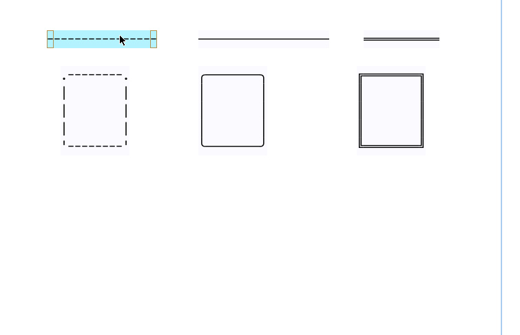
6 Exported to text
.--------. ╭────────╮ ┏━━━━━━━━┓ ╔════════╗
| | │ │ ┃ ┃ ║ ║
| | │ │ ┃ ┏━━━━━┻━━┓ ║ ║
| | │ │ ┃ ┃ ┃ ║ ║
'--------' ╰────────╯ ┗━━┫ ┃ ╚════════╝
┃ ┃
┗━━━━━━━━┛
| │ ┃ ║
| │ ┃ ║
| │ ┃ ║
| │ ━━━━━╋━━━━━━ ║
| │ ┃ ║
| │ ┃ ║
| │ ┃ ║
| │ ┃ ║
| │ ┃ ║
.--------.
| | ╭─┬────────┬─────╮
| .-----'--. │ │ │ │
| | | │ │ │ │
'--. | │ │ │ │ ╔══════════════╗
| | │ ╰────────╯ │ ║ ║
'--------' │ │ ║ ║
│ │ ║ ║
│ ╔═══════╧╗ ║ ║
│ ║ ║ ║ ║
╰────────╢ ║ ║ ║
║ ║ ║ ║
╚════════╝ ╚══════════════╝
slides
You can create a slide show with Asciio ... but it's a work in progress. We write some documentation here but you're better off asking the developers directly.
Bindings
| binding | action |
|---|---|
| S | enter slides mode |
| Escape | escape slides mode |
| L | Load slides |
| n | next slide |
| N | previous slide |
| g | first slide |
| s | run script |
| n/a | show previous message |
| n/a | show next message |
Slides Format
Slides are a very simplified script.
use strict ;
use warnings ;
use App::Asciio::Utils::Presentation ;
# the slides definition
[
# first slide
[
# text is added to a box at 0, 0
"0 intro",
# you can add scritpt with shortcuts per slide
{
a => sub
{
my ($self) = @_ ;
App::Asciio::Actions::Elements::add_element($self, ['Asciio/box', 0, 20, 20]) ;
},
},
],
# second slide
[
# if you have multiple elements in squre bracket, Asciio uses them as steps in your slide
[ "1.0", ],
[ "1.1", ],
# a step within a step, thereäs no limit but navigation becomes more intricate
[
["1.2.0", ]
],
],
# third slide
[
clear_and_box_at(0, 0, "2"), ],
],
# fourth slide
[
# you can load an asciio file
load(0, 0, 'path/file.asciio'),
# and add elements to the slide
box(10, 20, 'title', '3', 0),
],
# final slide
[
clear_all(),
# multiline box
box(19, 11, '', <<'EOT', 0),
6.0
(\_/)
(O.o) ASCII world domination is near!
(> <)
EOT
],
]
Utilities are defined in lib/App/Asciio/Utils/Presentation.pm
Examples
Unix structure
.---. .---. .---. .---. .---. .---.
OS API '---' '---' '---' '---' '---' '---'
| | | | | |
v v | v | v
.------------. | .-----------. | .-----.
| Filesystem | | | Scheduler | | | MMU |
'------------' | '-----------' | '-----'
| | | |
v | | v
.----. | | .---------.
| IO |<----' | | Network |
'----' | '---------'
| | |
v v v
.---------------------------------------.
| HAL |
'---------------------------------------'
Documenting hardware instrumentation
_____
| ___ |
||___|| load
| ooo |--.------------------.------------------------.
'_____' | | |
v v v
.----------. .--------------------------. .----------------.
| module C | | module A | | module B |
'----------' |--------------------------| | (instrumented) |
| | .-----. | '----------------'
'---------------->| A.o | | |
| '-----' | |
| .------------------. | |
| | A.instrumented.o |<-------------'
| '------------------' |
'--------------------------'
Decorating Forth code
index? dup dup dup dup dup average @ + average ! ." data = " .
.--------------.
| Data Stack |
|--------------|
| next element |-----> average @ + average !
| dup |-----> ." data = " .
| dup |-----> minv @ < if--.
| dup | '------> minv ! ." (new minv) " or DROP after ELSE
| dup |-----> maxv @ > if---.
| dup | '----> maxv ! ." (new maxv) " or DROP after ELSE
'--------------'
minv @ < if
minv ! ." (new minv) "
else drop \ data > minv so it's ignored
maxv @ > if
maxv ! ." (new maxv) "
else drop \ data < maxv so it's ignored
then
then
counter @ 1 - counter ! \ Decrement counter
example 1
describing a class hierarchy
.-Base::Class::Derived_B
/
Something::Else /
\ .----Base::Class::Derived_C
\ /
'----Base::Class
' \
/ '----Latest::Greatest
Some::Thing--'
German railroad
Graph-Easy is an application that generates graphs in ASCII, a bit like GraphViz.
..................................
: v
+------+ +--------+ ............. +---------+ +---------+
| Bonn | --> | Berlin | --> : : --> | Potsdam | ==> | Cottbus |
+------+ +--------+ : : +---------+ +---------+
^ : : ^
| : Frankfurt : |
| : : |
+--------+ : : +---------+ |
| x | --> : : <-- | y | ------+
+--------+ :...........: +---------+
|
|
v
+-----------+
| Dresden |
+-----------+
I re-drew the example above in Asciio.
.------------------------------.
| |
| v
.------. .--------. .-----------. .---------. .---------.
| Bonn |-.->| Berlin |-.->| Frankfurt |-.->| Potsdam |->| Cottbus |
'------' | '--------' | '-----------' | '---------' '---------'
| | | ^
.---. | | .---------. |
| x |-----------' '->| Dresden | |
'---' | '---------' |
.---. | |
| y |-----------'-------------------------------------'
'---'
There are few interesting things to notice:
- Graph-Easy smartly changes the size of the boxes to accommodate more connections
- Asciio doesn't have a routing functionality for graph, it would be a nice addition
- Asciio has 4 connectors per box (but you can get around it)
Unicode Example
Asciio does't generate SVG but, in the spirit of unix tools, rely on another tool to convert text files to SVG.
The "goat" project (https://github.com/blampe/goat) has been chosen to make the conversion, it must be installed, but you can use any converter you want; I recommend having a look athe ecexelent SVGBob too.
See the "Exporter" section to learn how to write your own.
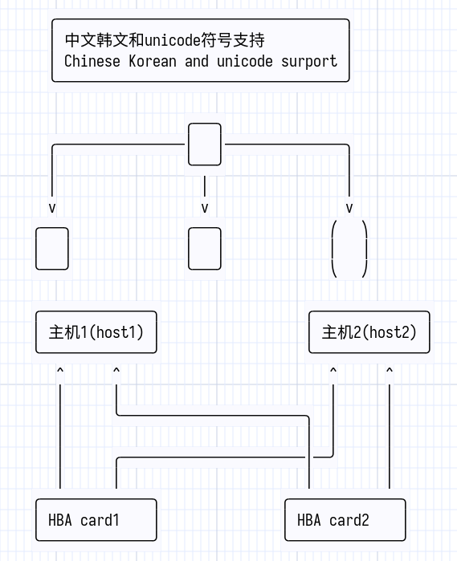
videos
-
presentation
-
efficient session
-
grouping
-
working with external commands
-
input to asciio
-
using Asciio's output
-
-
doing a presentation with Asciio
-
writing requirements with Asciio and markdown
Some older videos (15 years!) that show some basic usage:
Bindings
Both GUI and TUI have vim-like bindings, the GUI has a few extra bindings that are usually found in GUI applications; bindings can be modified.
It's faster and easier to work with keyboard shortcuts than the mouse and the number of combination of mouse buttons * control-keys is very limited.
Asciio bindings are vim-like, they initially take more time to get used to, and often take multiple key presses but they are much more logical as families of commands are accessed with shortcuts that start with the same letter.
The bindings can be changed in your user configuration, See configuration/user_bindings
Bindings help
Binding: zb
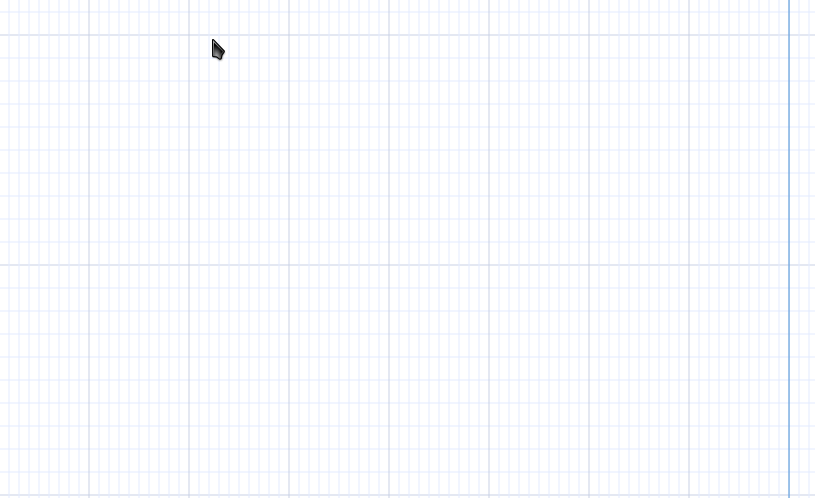
You can get a pop up showing the bindings (? in the top level) Or you can configure it:
USE_BINDINGS_COMPLETION => 1,
Bindings map
bindings change truth is in the config not this snapshot
Mouse
| action | binding |
|---|---|
| Edit selected element | 000-2button-press-1 |
| Edit selected element inline | C00-2button-press-1 |
| Mouse right-click | 000-button-press-3, |
| Mouse left-click | 000-button-press-1, |
| Mouse expand selection | 00S-button-press-1, |
| Mouse selection flip | C00-button-press-1, |
| Mouse quick link | 0A0-button-press-1 |
| Mouse duplicate elements | 0AS-button-press-1 |
| Mouse quick box | C0S-button-press-1 |
| Arrow to mouse | CA0-motion_notify, |
| Arrow mouse change direction | CA0-2button-press-1 |
| Arrow change direction | CA0-d, |
| Wirl arrow add section | CA0-button-press-1, |
| Wirl arrow insert flex point | CA0-button-press-2, |
| Mouse motion | 000-motion_notify, |
| Mouse motion 2 | 0AS-motion_notify, |
| Mouse drag canvas | C00-motion_notify, |
| Zoom in | C00-scroll-up, |
| Zoom out | C00-scroll-down, |
Mouse emulation
| action | binding |
|---|---|
| Toggle mouse | «'» |
| Mouse shift-left-click | «Ö» |
| Mouse left-click | «ö» |
| Mouse right-click | «ä» |
| Mouse drag left 3 | «H» |
| Mouse drag down 3 | «J» |
| Mouse drag up 3 | «K» |
| Mouse drag right 3 | «L» |
| Mouse drag down | «Down» |
| Mouse drag left | «Left» |
| Mouse drag right | «Right» |
| Mouse drag up | «Up» |
| Mouse drag down | «A-Down» |
| Mouse drag left | «A-Left» |
| Mouse drag right | «A-Right» |
| Mouse drag up | «A-Up» |
| Mouse alt-left-click | «ö» |
| Mouse ctl-left-click | «ö» |
Why vim-like bindings
Combinations
To simplify, let's start with having 26 letters accessible on the keyboard, no uppercase.
- using ctl + alt + key gives us around 100 combinations
- letter + letter gives use around 650 combinations
- letter + letter + letter gives use around 18 000 combinations
If we had uppercase, ie, 52 letters
- using ctl + alt + key gives us around 200 combinations
- letter + letter + letter gives use around 140 000 combinations
Speed
typing ctl + alt + key is not faster than key + key + key, and even less key + key
Structure and mnemonics
Of course we don't need tens of thousands of combinations
But do you know what CA0-a does? C0S-A? 0AS-a? CAS-A? C00-A? 0A0-a? 00S-a? ... without looking at the docs?
The whole point vim-like binding is to remember them, it's not a perfect system but it's expandable and easier to remember
Let me give you and example, we have multiple types of boxes, let's say
- normal
- unicode
- shrink
- with hash tag as a border
Let' start with a generic binder «i» for insert and «b» for box
- «ibb» normal, we cound have used «ibn» too but the most used keys are usually double for speed
- «ibu» unicode
- «ibs» shrink
- «ibh» with hash tag as a border
The good thing here is that we can use the same thing for arrows but with «ia» as a prefix.
But let's imagine that you come up with 4 new types of unicode borders (well you have), I don't want to imagine how to do that with the mouse, and with ctl + .... we've run out of shortcuts that are easy to remember. on the other hand ...
- «ibb» normal, we cound have used «ibn» too but the most used keys are usually double for speed
- «ibuu» unicode
- «ibu1» unicode
- «ibu2» unicode
- «ibu3» unicode
- «ibs» shrink
- «ibh» with hash tag as a border
I used 1, 2, and 3 because I was lacking imagination but
- double
- thick
- whatnot
would have given us keys to remember.
Quizz
Do you remember (although you've just seen it) ...
- insert a box
- insert a box using unicode type 2
- insert a box that shrinks
- insert a box with the default unicode
single key bindings
«Enter» Edit selected element
«d» Delete selected element(s)
«u» Undo
«C»-r Redo
«.» Quick link
«,» Quick copy
«R» Remove rulers
GUI bindings
keyboard
«C00-a» Select all elements
«C00-c» Copy to clipboard
«C00-e» Export to clipboard & primary as ascii
«C00-v» Insert from clipboard
«C0S-V» Import from primary to box
«C00-z» Undo
«C00-y» Redo
«+» Zoom in
«-» Zoom out
mouse
«double-click» Edit selected element
«C00-button-1» Add to selection
«0A0-button-1» Quick link
«0AS-button-1» Duplicate elements
«CA0-button-1» Insert flex point (in arrow)
Moving elements
«h» Move selected elements left
«j» Move selected elements down
«k» Move selected elements up
«l» Move selected elements right
«Left» Move selected elements left
«Down» Move selected elements down
«Up» Move selected elements up
«Right» Move selected elements right
Selecting elements
«n» Select next element
«N» Select previous element
«Tab» Select next element move mouse
«V» Select all elements
«v» Select connected elements
«Escape» Deselect all elements
Resizing elements
Bindings:
-
«1» Make element narrower
-
«2» Make element taller
-
«3» Make element shorter
-
«4» Make element wider
- «s» Shrink box
There an auto-shrink attribute so you don't have to shrink boxes manually each time you change their size.
There's also a box you can add which already has auto-shrink set; you can insert it with a shortcut or via the popup menu.
Binding: «iB» Add auto-shrink box:
Clipboard
«y» Copy to clipboard
«p» Insert from clipboard
«Y» Export to clipboard & primary as ascii
«P» Import from primary to box
«A-P» Import from primary to text
multiple key bindings
«:» command group:
«:» command group:
«q» Quit
«Q» Quit no save
«w» Save
«W» SaveAs
«e» Open
«r» Insert
«m» Display manpage
«h» Help
«c» Display commands
«f» Display action files
«k» Display keyboard mapping
«i» Insert group
«i» Insert group:
«A» Add angled arrow
«a» Add arrow
«A-a» Add unicode arrow
«B» Add shrink box
«b» Add box
«A-b» Add unicode box
«c» Add connector
«E» Add exec-box no border
«e» Add exec-box
«f» Insert from file
«g» Add group object type 1
«h» Add help box
«i» Add if-box
«R» Add horizontal ruler
«x» External command output in a box
«X» External command output in a box no frame
«p» Add process
«r» Add vertical ruler
«t» Add text
«a» arrow group
«a» arrow group:
«S» Insert multi-wirl section
«f» Flip arrow start and end
«d» Change arrow direction
«s» Append multi-wirl sectioni
«A-s» Remove last section from multi-wirl
«A» align group
«A» align group:
«t» Align top
«l» Align left
«b» Align bottom
«r» Align right
«h» Align horizontally
«v» Align vertically
«g» grouping group
«g» grouping group:
«g» Group selected elements
«u» Ungroup selected elements
«F» Temporary move selected element to the front
«f» Move selected elements to the front
«b» Move selected elements to the back
«A-g» stripes-group group
«A-g» stripes-group group:
«1» Create one stripe group
«g» Create stripes group
«u» Ungroup stripes group
«z» display group
«z» display group:
«C» Change grid color
«c» Change Asciio background color
«g» Flip grid display
«s» Flip color scheme
«t» Flip transparent element background
«S» slides group
«S» slides group:
«N» Previous slide
«g» First slide
«l» Load slides
«n» Next slide
«D» Debug group
«D» debug group:
«E» Dump selected elements
«e» Dump all elements
«S» Display undo stack statistics
«o» Test
«s» Dump self
«t» Display numbered objects
Configuration
Your user configuration is '$HOME/.config/Asciio/Asciio.ini'
Your configuration file has this format:
{
STENCILS =>
[
#'stencils/asciio',
],
ACTION_FILES =>
[
#'actions/xxx.pl',
],
HOOK_FILES =>
[
],
ASCIIO_OBJECT_SETUP =>
[
#$ASCIIO_UI eq 'TUI' ? 'asciio_object/tui.pl' : 'asciio_object/gui.pl' ,
],
IMPORT_EXPORT =>
[
#'import_export/ascii.pl',
],
}
user bindings
The bindings can be changed in your user configuration. File '$HOME/.config/Asciio/Asciio.ini' points at the
Here's and example of binding:
'Change elements foreground color' => ['000-c', \&App::Asciio::Actions::Colors::change_elements_colors, 0 ],
Bindings are composed of:
- a command name
- a set of keyboard shortcuts
To change a binding:
- Find the command name for the binding you want to change
- decide a new keyboard shortcuts
- add your binding to your configuration file
Your configuration file has this format:
{
...
ACTION_FILES =>
[
'actions/colors.pl', # new configuration file where you want to put your color bindings
],
...
}
Create '$HOME/.config/Asciio/actions/colors.pl' and add:
register_action_handlers
(
'Change elements foreground color' => ['000-Z'],
) ;
Binding format
A binding contains:
- unique name for your binding
- shortcut, multiple shortcuts are passed as ['shortcut_1', 'shortcut_2', ...]
- action sub reference
- arguments to the action sub reference, optional
- popup-menu sub reference, optional
Example:
'Edit selected element inline' =>
[
['C00-2button-press-1','C00-Return'],
\&App::Asciio::Actions::ElementsManipulation::edit_selected_element,
1
],
Group bindings
Bindings can be grouped so you can use multiple key presses (vim-like) to reach an action.
'group name' =>
{
SHORTCUTS => 'C00-x',
'sub group name' =>
{
SHORTCUTS => 'C00-x',
'binding in sub group' => ['C00-x', sub { print "you're in x/x/x\n" ; } ],
} ,
'binding 1' => ['000-1', sub { print "you're in x/1\n" ; } ],
'binding 2' => ['000-2', sub { print "you're in x/2\n" ; } ],
},
Capturing groups
If a group has an ESCAPE_KEY, the group is a capturing group. The group's bindings will be used repeatedly till the ESCAPE_KEY is pressed.
'capture group' =>
{
SHORTCUTS => '0A0-c',
ESCAPE_KEY => '000-Escape',
'capture x' => [ '000-x', sub { print "captured x\n"; } ],
'capture y' => [ '000-y', sub { print "captured y\n"; } ],
},
Binding override
You can re-bind an existing shortcut to another command, Asciio will generate a warning in the console.
Overriding shortcut 'C00-y'
new is 'Redo 2' defined in file '.../actions/override_bindings.pl'
old was 'Redo' defined in file 'actions/default_bindings.pl'
Don't use the same shortcut multiple times in the same file, the order of registration in the same file not guaranteed.
Capturing groups with overlay
Define overlays
my $click_choice_element = ['Asciio/box', 0] ;
my $box_overlay =
[
[0, 0, '.'],
[1, 0, '-'],
[2, 0, '-'],
[3, 0, '-'],
[4, 0, '.'],
[0, 1, '|'],
[4, 1, '|'],
[0, 2, "'"],
[1, 2, '-'],
[2, 2, '-'],
[3, 2, '-'],
[4, 2, "'"],
] ;
my $text_overlay =
[
[0, 0, 'T.'],
[1, 0, 'e'],
[2, 0, 'x'],
[3, 0, 't'],
] ;
my $arrow_overlay =
[
[2, -2, '.'],
[3, -2, '-'],
[1, -1, '/'],
[0, 0, "'"],
] ;
Declare callbacks
my $click_element_overlay = $box_overlay ;
sub click_choice_add_element { App::Asciio::Actions::Elements::add_element($_[0], $click_choice_element) ; }
sub click_element_choice
{
my ($asciio, $args) = @_ ;
($click_element_overlay, $click_choice_element) = $args->@* ;
$asciio->update_display ;
}
sub click_element_enter { print "enter!!\n" ; my ($asciio) = @_ ; $asciio->set_overlays_sub(\&click_element_overlay) ; $asciio->update_display ; }
sub click_element_escape { my ($asciio) = @_ ; $asciio->set_overlays_sub(undef) ; $asciio->update_display ; }
sub click_element_mouse_motion
{
my ($asciio, $event) = @_ ;
App::Asciio::Actions::Mouse::mouse_motion($asciio, $event) ;
$asciio->update_display() ;
}
sub click_element_overlay
{
my ($asciio) = @_ ;
my @overlays = map { [ $asciio->{MOUSE_X} + $_->[0], $asciio->{MOUSE_Y} + $_->[1], $_->[2] ] } @$click_element_overlay ;
@overlays
}
Declare bindings
register_action_handlers
(
'insert on click' =>
{
SHORTCUTS => '0A0-i',
ENTER_GROUP => \&click_element_enter,
ESCAPE_KEY => '000-Escape',
'click element escape' => [ '000-Escape', \&click_element_escape ],
'click element motion' => [ '000-motion_notify', \&click_element_mouse_motion ],
'click element insert' => [ '000-button-press-1', \&click_choice_add_element ],
'click element arrow' => [ '000-a', \&click_element_choice, [$arrow_overlay, ['Asciio/angled_arrow', 0]] ],
'click element box' => [ '000-b', \&click_element_choice, [$box_overlay, ['Asciio/box', 0]] ],
'click element text' => [ '000-t', \&click_element_choice, [$text_overlay, ['Asciio/text', 0]] ],
},
) ;
For Developers
Scripting
# Generated by documentation/scripting/multi_wirl.pl
.------.
| box1 |<-----------------------------------.
'------' |
| .------.
| | box3 |
| '------'
| ^
| |
| .------. |
'-------------->| box2 |----------------'
'------'
__________
\ \
\ line 1 \
) line 2 )
/ line 3 /
/_________/
Executing your scripts
transform JSON, via Data::TreeDumper, to Asciio script
The *json_dtd_to_asciio_script' script is installed with Asciio. It will read a JSON stream from stdin.
It takes the following arguments:
- title
- x position
- y position
- 'box', if you want the data to be boxed
- start_level, 0/1: 0 meanss no start tree grlyph
<coordinates_json ./script/json_dtd_to_asciio_script '' 10 10 box 0 | stdin_to_asciio
Simplified scripting interface
The simplified scripting interface is an API which hides some of the scripting details for you.
Examples of scripts, using both the simplified API and full API, can be found in the documentation/scripting directory of the distribution.
Create a new Perl script
Crate a file and add these lines
use strict; use warnings;
use App::Asciio::Scripting ;
This will set some sanity checks on your code and load the simplified scripting interface.
Adding boxes
add 'box1', new_box(TEXT_ONLY =>'box1'), 0, 2 ;
add 'box2', new_box(TEXT_ONLY =>'box2'), 20, 10 ;
add 'box3', new_box(TEXT_ONLY =>'box3'), 40, 5 ;
The simplified scripting interface lets you name your object so you can later connect them together.
Adding connections
connect_elements 'box1', 'box2', 'down' ;
connect_elements 'box2', 'box3' ;
connect_elements 'box3', 'box1', 'up' ;
You can hint Asciio about the direction of your arrows.
Canonizing connections
Asciio tries to route the arrows properly, this is done automatically in the UIs but you need to do it manually in scripts.
optimize ;
Printing and saving the result
save_to "from_script.asciio" ;
ascii_out ;
You can save your work to an asciio file or print it out
Adding multi-wirl arrows
You can write more advanced script where you route multi sections arrows around your elements.
|
|
|
|
|
'----.
|
'----.
|
|
|
|
|
|
<--'
You'll also need to use the right module; in fact you have access to everything that's in Asciio from your scrips, it's just a little bit more work than using the simplified interface.
# documentation/scripting/multi_wirl.pl
use strict; use warnings;
use App::Asciio::Scripting ;
#-----------------------------------------------------------------------------
add 'multi_wirl', new_wirl_arrow([5, 5, 'downright'], [10, 7, 'downright'], [7, 14, 'downleft']), 5, 5 ;
ascii_out ;
Full example
You can find more examples in the documentation/scripting/ library of the project.
# documentation/scripting/multi_wirl.pl
use strict; use warnings;
use App::Asciio::Scripting ;
#-----------------------------------------------------------------------------
add 'text1', new_text(TEXT_ONLY =>'text'), 22, 20 ;
add 'box1', new_box(TEXT_ONLY =>'box1'), 0, 2 ;
add 'box2', new_box(TEXT_ONLY =>'box2'), 20, 10 ;
add 'box3', new_box(TEXT_ONLY =>'box3'), 40, 5 ;
connect_elements 'box1', 'box2', 'down' ;
connect_elements 'box2', 'box3' ;
connect_elements 'box3', 'box1', 'up' ;
connect_elements 'box2', 'text1' ;
my $process = add_type 'process', 'Asciio/Boxes/process', 5, 15 ;
$process->set_text("line 1\nline 2\nline 3") ;
optimize ;
save_to "from_script.asciio" ;
ascii_out ;
Executing your script
From the command line
The script is a normal perl script.
perl my_asciio_script.pl
From within Asciio
Binding: «:!»
Pick the file you want to execute.
Or pass it on the command line
asciio -s full_path_to_script
Via Asciio's Web server
You can POST scripts via HTTP.
Asciio runs a web server at port 4444; you can change the port with --port other_port.
script commands
POST http://localhost:4444/script script="add '1', new_box, 0, 0 ;"
You can have multiple commands in your script.
script file
POST http://localhost:4444/script_file script="path_to_script"
connecting to Asciio Web server
- directly from your application
- via a command line application like xh (https://github.com/ducaale/xh) or httpie.
- piping to stdin_to_asciio script which is installed with asciio (uses xh).
Example:
# bash script that adds an element to an asciio instance, offsets it, and deletes it
# create a script to add one element, the script can contain many scripting commands
# httpie has a large startup time, use xh instead
script= ; for i in $(seq 1) ; do script="$script add '1', new_box(TEXT_ONLY =>'$i'), $((($i - 1) * 6)), $((($i - 1) * 4)) ;" ; done
# execute the script
xh -f POST http://localhost:4444/script script="$script"
# offset the element
for i in $(seq 25) ; do sleep .05 ; xh -f POST http://localhost:4444/script script="offset '1', 1, 1 ;" ; done
# delete the element
xh -f POST http://localhost:4444/script script="delete_by_name '1' ;"
Simplified Scripting API
stop_updating_display
Stops updating the display until start_updating_display is called; this can be used to reduce flickering.
stop_updating_display
start_updating_display
Start updating the display; display will automatically be updated from when this is called. An update is also made.
start_updating_display
create_undo_snapshot
Creates an undo snapshot.
create_undo_snapshot ;
add
Adds a named element:
- element_name
- element, see new_box new_text, ... below
- x coordinate
- y coordinate
add 'text1', new_text(TEXT_ONLY =>'text'), 22, 20 ;
delete_by_name
Deletes an element by name
delete_by_name 'text1' ;
delete_selected_elements
Deletes selected elements
delete_selected_elements ;
add_type
Adds a named element:
- element_name
- element_type
- x coordinate
- y coordinate
Returns the element.
my $process = add_type 'process', 'Asciio/Boxes/process', 5, 15 ;
new_box
Creates a new box element. Use it with add.
new_box() ; # default box text
new_box(TEXT_ONLY =>'text') ;
new_text
Creates a new text element. Use it with add.
new_text(TEXT_ONLY =>'text') ;
new_wirl_arrow
Creates a new wirl-arrow element. Use it with add.
Pass wirl arrow section coordinates and directions as arguments.
new_wirl_arrow([5, 5, 'downright'], [10, 7, 'downright'], [7, 14, 'downleft']) ;
move
Moves a namex element to a new coordinate:
- element name
- x position
- y position
move 'text1', 22, 20 ;
offset
Offsets a named element:
- element name
- x offset
- y offset
offset 'text1', 22, 20 ;
change_selected_elements_color
Changes selected elements background or foreground color.
change_selected_elements_color 1, [1, 0, 0] ; # foreground color to red
select_by_name
Selects an elements by name.
select_by_name 'A' ;
select_all_elements
Selects all the elements in Asciio.
select_all_elements ;
deselect_all_elements
Deselects all the elements in Asciio.
deselect_all_elements ;
select_all_script_elements
Selects all the elements added by the script.
select_all_script_elements ;
deselect_all_script_elements
Deselects all the elements added by the script.
deselect_all_script_elements ;
connect_elements
Connects named elements with a wirl-arrow.
connect_elements 'box2', 'text1' ;
optimize
Optimizes the connections.
optimize
delete_all_ruler_lines
Deletes all ruler lines.
delete_all_ruler_lines ;
add_ruler_line
Adds a ruler line.
- axis: 'vertical' or 'horizontal'
- position
add_ruler_line 'vertical, 10 ;
save_to
Saves the diagram to a file in Asciio's native format.
save_to 'diagram.asciio' ;
to_ascii
Returns the diagram as ASCII.
to_ascii ;
ascii_out
Prints the diagram, as ASCII, to stdout.
ascii_out ;
Modifying Asciio
Bindings
Bindings consists of
-
a descriptive but short name
-
one or more key to assign the binding
-
a reference to a handler
-
possible arguments for the handler
'Mouse quick link git' => [['0A0-button-press-3', '00S-semicolon'], \&App::Asciio::Actions::Git::quick_link]
Goals when adding bindings:
-
keep code separate from other bindings code if the new bindings are not very general, ie: code them in their own module
-
align the structures
-
avoid long or generic or numbered name
-
if possible the bindings should be the same as the vim-bindings
- some GUI standards may require different bindings, IE: C00-A to select everything
-
create an equivalent binding set in the vim bindings file
-
documents the bindings
- name, keep them logical, start with an uppercase
- key
- what they do, preferably with some screenshot
-
don't use control, shift and alt if possible (logical)
-
split groups if they become too large
-
sort by name or key if possible
Binding Groups
'<< selection leader >>' =>
{
SHORTCUTS => '000-r', # also accepts multiple entries in an array ref
ENTER_GROUP => \&App::Asciio::Actions::Selection::selection_enter,
ESCAPE_KEYS => [ '000-r', '000-Escape' ], # also accepts single entry
# ESCAPE_KEYS need to be define of group will catch input untill an action is selected
# same keys as the ESCAPE_KEYS, will be called on exit
'Selection escape' => [ '000-r', \&App::Asciio::Actions::Selection::selection_escape ],
'Selection escape2' => [ '000-Escape', \&App::Asciio::Actions::Selection::selection_escape ],
# simple action
'select flip mode' => [ '000-f', \&App::Asciio::Actions::Selection::selection_mode_flip ],
# handle mouse movement
'select motion' => [ '000-motion_notify', \&App::Asciio::Actions::Selection::select_elements ],
},
Debugging
See the Debugging bindings.
Asiio can output to the console, any call to print will be displayed in it.
You can use Data::TreeDumper to display structured debug output.
You can of course run Asciio in the perl debugger.
Basic introduction
When the borders of two text elements intersect, we generate some compensating characters to cover the borders, resulting in nicer graphics
| ││ │ │
| ││ │ │
-----|---> ──││────│──│─
| ││ │ │
| ││ │ │
v
Look at the text above, their borders are overlapping each other. The text we need to generate is as follows:
| ││ │ │
| ││ │ │
-----+---> ──┼┼────┼──┼─
| ││ │ │
| ││ │ │
v
We need to generate padding characters at their boundaries, then the steps are as follows:
- find the cross point.
- Determine the characters to be filled at the current cross point according to the characters around the cross point.
- Determine whether the current cross point has the expected fill character, if so, keep it, if not, add it, and delete the old fill character.
- remove all filling characters that are not at cross points.
- update drawing.
Detailed steps
1 Find the cross point
The cross point must be the coverage of characters, and the characters that cover each other are the characters we care about.
The characters we care about refer to commonly used tab characters, or ascii plus dots, etc.
Commonly used symbols include these, of course not only these
'-', '|', '.', '\'', '\\', '/', '+',
'─', '│', '┼', '┤', '├', '┬', '┴', '╭', '╮', '╯', '╰',
'━', '┃', '╋', '┫', '┣', '┳', '┻', '┏', '┓', '┛', '┗',
'═', '║', '╬', '╣', '╠', '╦', '╩', '╔', '╗', '╝', '╚',
'╫', '╪', '╨', '╧', '╥', '╤', '╢', '╡', '╟', '╞', '╜',
'╛', '╙', '╘', '╖', '╕', '╓', '╒'
condition of cross points:
- text elements crossed
- The two characters that intersect each other are the characters we care about
When the condition is found to be met, both characters need to be logged. At the same time, we need to record the characters around the cross point, because they absolutely determine what kind of cross point is generated.
Record the upper, lower, left, and right characters. If you want to achieve diagonal crossing, you also need to record characters at 45 degrees, 135 degrees, 225 degrees, and 315 degrees.
2 Judgment scene
2.1 General situation
First of all, all cross characters are directional, we need to group them by direction and type.
Let me give you an example, if the center has generated a character┼,
Then we can use the method of proof by contradiction, its left side
must be these characters, otherwise it is unreasonable.
'─', '┼', '├', '┬', '┴', '╭', '╰'
These characters all can appear to the left of it(Because their right sides
can be extended to become a line), But if these characters do not appear on
the left side of ┼, then we think it is unreasonable to use this ┼, and
the disproof condition is false.
'-', '|', '.', '\'', '\\', '/', '+',
'─', '│', '┼', '┤', '├', '┬', '┴', '╭', '╮', '╯', '╰',
'━', '┃', '╋', '┫', '┣', '┳', '┻', '┏', '┓', '┛', '┗',
'═', '║', '╬', '╣', '╠', '╦', '╩', '╔', '╗', '╝', '╚',
'╫', '╪', '╨', '╧', '╥', '╤', '╢', '╡', '╟', '╞', '╜',
'╛', '╙', '╘', '╖', '╕', '╓', '╒'
Make assumptions about the occurrence of each possible padding crossing character above, untilSupposed to be true.
│
──│──
│
For the plus sign, the condition for its appearance is that:
- A character in the upper character set appears in the upper direction
- A character in the down direction character set appears in the down direction
- A character in the left-direction character set appears in the left direction
- A character in the right-direction character set appears in the right direction
If these conditions are met, the intermediate characters can be corrected as ┼:
│
──┼──
│
Let's look at a more complex situation, The intersection below, we know, needs
one ╤ to fill.
═══│════
│
│
For the ╤ sign, the condition for its appearance is that:
- Left is one of the left characters of the double-line character set
- Right is one of the right characters of the double-line character set
- Down is one of the down characters in the single-line character set
- Up cannot be one of the up characters in the single-line character set
Pay attention to the bold part above, because if this condition is true,
then the filling character should be ╪, not ╤.
2.2 Improve efficiency
There is no need to perform calculations every time to determine the characters filled in the middle. Whenever a new scene calculation occurs, we can save the calculation result in a cache and read it directly next time without performing logical calculations again.
A hash table is most suitable for this, and the hash key can use a combination of upper, lower, left, and right characters(The oblique lines are the four diagonal directions.).
2.3 An additional case needs to be considered separately
││
──││─────
││
││
please see this text, It is expected that we are going to get the following text:
││
──┼┼─────
││
││
As you noticed, there are two plus signs filled.
Let's take the point that needs to be filled on the left as an example:

We can see that characters in three directions meet the requirements, but characters in one direction do not meet the requirements. But the point on the right is actually also an cross point, it has two characters, one in the foreground and one in the background. The character in the background is ok, so we think it ok!
In summary: If the character next to it is also an cross point, then either the foreground character or the background character of the intersection can meet the requirements.So I said earlier that the foreground and background characters of the cross point all need to be recorded.In fact, there may be more than one character that meets the condition in the background, so all of these characters need to be considered, not just limited to 2 characters.
2.4 The case of character coverage
There is another situation that needs to be explained separately,Similar to above but slightly different
╭─────╮
│ ╭─────╮
│ │ │
│ │ │
╰─│ │
╰─────╯
The text we need to get is this:
╭─────╮
│ ╭───┴─╮
│ │ │
│ │ │
╰─┤ │
╰─────╯
This looks like two boxes stacked,According to the above statement, the overlapping parts, both foreground characters and background characters must be considered.**But not like this!**The overlapping foreground characters are spaces, and spaces are not characters in the character set, so they are not considered.
To put it simply: as long as it is not an cross point, only foreground characters are considered.
The definition of the cross point has already been mentioned in the previous chapter
2.5 A method to simplify logical judgment
When we determine what characters should be filled in a point, we first consider the characters in the four directions. Then after these characters are considered, characters in three directions are considered, and finally characters in two directions are considered. The advantage of this is that if the characters in the four directions do not meet the conditions, then when judging the characters in the three directions, there is no need to repeatedly consider that a certain character may be a character in the four directions, because it has been ruled out before. Similar logic is used for two-way characters. This can greatly reduce the complexity of logical judgment.
Unicode character classification
- characters of length 1
- characters of length 2
- characters of length 0
The length mentioned here refers to the printed length of the characters, that is, the length seen by the eyes
Characters of length 1
Most unicode characters are characters with a length of 1, such as the commonly used tab character, ascii characters.
a b c d , . ┼ ┬ │
Characters of length 2
Characters with a typographical width of 2 refer primarily to East Asian pictographs and related special punctuation, as well as full-width characters.
你好啊！《》
안녕하세요
こんにちは
They need to occupy two grids in the UI interface. Then aligning them requires special fonts that align 2:1 with width 1 characters.Here is a commonly used font.
https://github.com/be5invis/Sarasa-Gothic/
These characters have a special property called East Asian Width. They are included in the unicode standard, so they can be used as a programming basis.
Links to the unicode standard: https://www.unicode.org/reports/tr11/tr11-40.html
In perl's unicode documentation, corresponding properties are also provided to use.
This represents a wide character, occupying two spaces:
\p{EA=W}
This represents a full-width character, which also occupies two spaces:
\p{EA=F}
The above information can be found here:
https://perldoc.perl.org/perlunicook
https://perldoc.perl.org/perlunicode
Characters of length 0
In some languages, there are special characters whose string length is 1, but they do not occupy physical space on the interface, they will be attached to the previous characters.they are called nonspacing characters.Occurs in Thai and Arabic, as well as Hebrew
◌ั ◌ึ ◌ุ
Please look at the above characters, they cannot appear alone, they must be used in combination with the previous entity characters, and then they will appear above or below the previous characters.
These characters are called Nonspacing characters in the unicode standard, and then they have the following properties that can be used for programming
\p{gc:Mn}
To support Thai, or Arabic, or Hebrew, like East Asian languages, we also need a special font that can be aligned.In general, the system's default monospaced font can align them
Overlay
After Asciio draws the elements, a user defined call back is called.
User defined callback
The callback receives an instance of Asciio as the first argument, you can use that instance to get elements, ...
The callback return a list of 1character overlay in array references:
- x coordinate
- y coordinate
- character
- optional background color
- optional foreground color
Example list:
[ 0, 0, 'T'],
[ 1, 0, 'e'],
[ 2, 0, 's'],
[ 3, 0, 't'],
Setting and resetting the callback
The callback is set by calling $asciio->set_overlays_sub. The simplest is to do it via a key binding.
'set overlays' =>
[
'0A0-o',
sub
{
my ($asciio) = @_ ;
$asciio->set_overlays_sub
(
sub { [0, 0, 'O'], [1, 0, 'K'] }
) ;
$asciio->update_display ;
}
],
Reset the callback
'reset overlays' => [ '000-o', sub { $_[0]->set_overlays_sub(undef) ; $_[0]->update_display ; } ],
Callback access to canvas
The callback can also have access to the canvas, but don't
Arguments:
- $asciio
- $UI_type, set to GUI/TUI
- $gc
- $widget_width
- $widget_height
- $character_width
- $character_height
Example: draw and overlay and a filled rectangle above the mouse pointer
sub click_element_overlay
{
my ($asciio, $UI_type, $gc, $widget_width, $widget_height, $character_width, $character_height) = @_ ;
# draw directly
if($UI_type eq 'GUI')
{
my $surface = Cairo::ImageSurface->create('argb32', 50, 50) ;
my $gco = Cairo::Context->create($surface) ;
my $background_color = $asciio->get_color('cross_filler_background') ;
$gco->set_source_rgb(@$background_color) ;
$gco->rectangle(0, 0, $character_width, $character_height) ;
$gco->fill() ;
$gc->set_source_surface($surface, ($asciio->{MOUSE_X} - 1 ) * $character_width, ($asciio->{MOUSE_Y} - 1) * $character_height);
$gc->paint() ;
}
# send a list of characters to draw
my @overlays = map { [ $asciio->{MOUSE_X} + $_->[0], $asciio->{MOUSE_Y} + $_->[1], $_->[2] ] } @$click_element_overlay ;
@overlays
}
Callback hide/show mouse
Hide and show the mouse pointer, useful if you draw objects that are moved around.
sub callback_enter { my ($asciio) = @_ ; $asciio->hide_cursor ; ... }
sub callback_escape { my ($asciio) = @_ ; $asciio->show_cursor ; ... }
Contributors
Khemir Nadim ibn Hamouda
https://github.com/nkh
CPAN ID: NKH
Qin Qing
northisland2017@gmail.com
Unicode support, scroll bar, and rhombus object
License and copyright
This program is free software; you can redistribute it and/or modify it
under the same terms as Perl itself or GPL3.
See Also
SVG conversion: goat
Tree generation: ascii_tree
ASCII Math and other: Diagon
Fun! AACircuit
Impressive shaape
Stencils Asciio ditaa
Source for some of the network stencil Ascii art
*\o_ _o/*
/ * * \
<\ *\o/* />
)
o/* / > *\o
<\ />
__o */\ /\* o__
* /> <\ *
/\* __o_ _o__ */\
* / * * \ *
<\ />
*\o/*
ejm97 __)__